<!doctype html>
<html lang="en">
<head>
  <meta charset="utf-8">
  <meta name="viewport" content="width=device-width, initial-scale=1">
  <title>arxiv digest — 2026-07-03</title>
  <style>
:root {
  --bg: #ffffff;
  --fg: #1f2328;
  --muted: #59636e;
  --border: #d0d7de;
  --card: #f6f8fa;
  --link: #0969da;
}
body {
  max-width: 980px;
  margin: 0 auto;
  padding: 2rem 1rem 5rem;
  font-family: -apple-system, BlinkMacSystemFont, "Segoe UI", Helvetica, Arial, sans-serif;
  line-height: 1.55;
  color: var(--fg);
  background: var(--bg);
}
a { color: var(--link); }
img { max-width: 100%; height: auto; }
pre, code { background: var(--card); border-radius: 6px; }
pre { padding: 1rem; overflow-x: auto; }
blockquote { border-left: 4px solid var(--border); padding-left: 1rem; color: var(--muted); }
details { margin: 0.6rem 0; }
summary { cursor: pointer; font-weight: 600; }
.paper-figures-scroll {
  display: flex;
  gap: 1rem;
  overflow-x: auto;
  overscroll-behavior-x: contain;
  padding: 0.75rem 0.25rem 1rem;
  margin: 1rem 0 1.25rem;
  border-top: 1px solid var(--border);
  border-bottom: 1px solid var(--border);
  scroll-snap-type: x proximity;
}
.paper-figure-card {
  flex: 0 0 min(260px, 72vw);
  scroll-snap-align: start;
  background: var(--card);
  border: 1px solid var(--border);
  border-radius: 12px;
  padding: 0.55rem;
}
.paper-figure-card img {
  display: block;
  width: 100%;
  max-height: 240px;
  object-fit: contain;
  background: white;
  border-radius: 8px;
}
.paper-figure-caption {
  display: block;
  margin-top: 0.5rem;
  color: var(--muted);
  font-size: 0.85rem;
}
.figure-strip-hint {
  color: var(--muted);
  font-size: 0.9rem;
  margin-bottom: -0.3rem;
}
</style>
  <!-- MathJax: renders $...$ inline math and $$...$$ display math, plus
       \(...\) and \[...\]. Loaded from the official CDN; works offline
       once cached. Configured to skip code/pre blocks so arxiv IDs that
       look like dollar amounts don't get mangled. -->
  <script>
    window.MathJax = {
      tex: {
        inlineMath: [['$', '$'], ['\\(', '\\)']],
        displayMath: [['$$', '$$'], ['\\[', '\\]']],
        processEscapes: true,
        processEnvironments: true
      },
      options: {
        skipHtmlTags: ['script', 'noscript', 'style', 'textarea', 'pre', 'code'],
        ignoreHtmlClass: 'tex2jax_ignore',
        processHtmlClass: 'tex2jax_process'
      }
    };
  </script>
  <script id="MathJax-script" async
    src="https://cdn.jsdelivr.net/npm/mathjax@3/es5/tex-chtml.js"></script>
</head>
<body>
<header style="background-color: #333; color: white; padding: 15px; margin-bottom: 20px;">
  <h1 style="margin: 0; font-size: 24px;">
    <a href="https://ochelpan.github.io/arXiv_clean/" style="color: white; text-decoration: none;">Main</a>
  </h1>
</header>

<h1>Daily arXiv Report</h1>

<hr>
<p>
<a href="index.html">← Index</a>
 · <a href="papers_04.html">← Previous</a> · <a href="papers_06.html">Next →</a>
</p>
<hr>

<h2>Papers 81–100</h2>
<p><a id="paper-2607.00314"></a></p>
<h3 id="leggett-garg-inequality-in-the-massive-scalar-vacuum-no-violation-under-spacelike-separated-measurements"><a href="http://arxiv.org/abs/2607.00314v1">Leggett-Garg inequality in the massive scalar vacuum: No violation under spacelike-separated measurements</a></h3>
<p><strong>Authors:</strong> Yang Xiang<br>
<strong>Type:</strong> theory · <strong>Category:</strong> other · <strong>PDF:</strong> <a href="https://arxiv.org/pdf/2607.00314v1">https://arxiv.org/pdf/2607.00314v1</a><br>
<strong>Analysis basis:</strong> full PDF text, analyzed in chunks
<strong>Topic relevance:</strong> <code>Keldysh / 2PI / non-Gaussian methods</code> <strong>1/5</strong> · <code>entanglement &amp; information structure</code> <strong>1/5</strong> · <code>quantum measurements</code> <strong>1/5</strong></p>
<div class="figure-strip-hint">↔ Scroll figures horizontally</div>
<div class="paper-figures-scroll">
<figure class="paper-figure-card">

<figcaption class="paper-figure-caption"><b>Fig 1.</b> FIG. 1. K3(τ, L) for the massive scalar field with spacelike-separated measurements (L = τ +2+ǫ, ǫ = 10−3) for various masses m. The thin horizontal line marks the classical bound K3 = 1; for all masses considered, K3 remains strictly below 1. For each mass, the maximum occurs at the smallest accessible τ (τ = 0.001), and Kmax 3 decreases monotonically as m increases, from Kmax 3 ≈0.716 at m = 0.001 down to 0.403 at m = 0.4. For τ ≥2, the two time windows no longer overlap; the curves decay exponentially with τ, as expected from the spacelike decay of the massive Hadamard function.</figcaption>
</figure>
</div>

<p><strong>Summary.</strong> The paper investigates whether the vacuum state of a massive scalar field violates the Leggett-Garg inequality (LGI), which tests for macrorealism. By employing a spacelike-separated measurement protocol, they rigorously satisfy noninvasive measurability conditions in QFT. The key finding is that $K_3 < 1$, demonstrating that temporal correlations in this free quantum field are constrained by causality and do not violate the LGI.</p>
<p><strong>Why it may be interesting.</strong> This work provides a rigorous methodological benchmark for future tests of macrorealism in relativistic quantum fields, distinguishing between entanglement-based nonlocality (Bell) and temporal constraints imposed by causality (LGI).</p>
<details>
<summary>Detailed structure</summary>
<p><strong>Main problem.</strong> The paper addresses testing for macrorealism using Leggett-Garg inequality (LGI) tests in relativistic Quantum Field Theory (QFT), specifically overcoming the challenge of ensuring noninvasive measurability (NIM).</p>
<p><strong>Main result.</strong> Under strict spacelike separation conditions, the vacuum state of a free massive scalar field does not violate the LGI ($K_3 < 1$), establishing that macrorealism holds for temporal correlations in this system.</p>
<p><strong>Method.</strong> The authors use a protocol involving three independent ensembles measured at causally disconnected (spacelike-separated) events to calculate the LGI parameter $K_3$ from two-time correlation functions derived via the Heisenberg picture.</p>
<p><strong>Model / system.</strong> The model is the vacuum state of a free massive scalar field ($\phi$) in 1+1 dimensions. The analysis relies on calculating correlations using dichotomic observables, $   ext{sign}(\phi(f))$, and exploiting the Gaussian nature of the vacuum state.</p>
<p><strong>Key observables.</strong> The LGI parameter $K_3 = 2C(	au, L) - C(2	au, 2L)$ and the two-time correlation function $C(f, g) = \langle 0| 	ext{sign}(\phi(f)) 	ext{sign}(\phi(g)) |0
angle$.</p>
<p><strong>Important parameters / regimes.</strong> Mass ($m$), time separation ($  au$), and spatial separation ($L$). The condition for NIM is $L > 	au + 2	au_0$.</p>
<p><strong>Assumptions / limitations.</strong> The analysis assumes a free field theory, which implies the vacuum state is Gaussian. The protocol rigorously enforces spacelike separation to satisfy the Noninvasive Measurability (NIM) criterion.</p>
<p><strong>Figures summary.</strong> Figure 1 plots $K_3(	au, L)$ vs. $   au$ for different masses, showing that the calculated value remains below the classical bound of 1 and decays exponentially for large $ au$.</p>
<p><strong>Paper structure.</strong> The paper establishes the QFT framework for LGI testing under NIM, derives the necessary correlation functions using the Heisenberg picture, performs numerical computations for overlapping windows, and concludes by comparing the result to known Bell violations.</p>
</details>
<details>
<summary>Abstract</summary>
<p>We overcome the long-standing noninvasive measurability (NIM) challenge in Leggett-Garg tests by exploiting the causal structure of quantum field theory (QFT). Our protocol uses three independent ensembles of the vacuum state, each measured by a different pair of observers at spacelike-separated events, yielding the three two-time correlators. By placing these events at positions $(0,0)$, $(τ,L)$, and $(2τ,2L)$ with $L>τ+2τ_0$, we rigorously ensure that no measurement can influence another. We investigate the vacuum state of a free massive scalar field in 1+1 dimensions, employing the dichotomic observable $Q(f)=\operatorname{sign}(φ(f))$ where $φ(f)$ is the smeared field. In the Heisenberg picture, the time evolution is absorbed into a translation of the time-window function, allowing us to derive the two-time correlation function $C(τ,L)$ and the Leggett-Garg parameter $K_3=2C(τ,L)-C(2τ,2L)$. For non-overlapping time windows, we find that the correlation function decays exponentially with $τ$ for a massive field. For overlapping windows, our numerical computation for a rectangular time window yields $K_3<1$ across the entire mass range, firmly establishing that the vacuum does not violate the LGI. Thus, under strict noninvasive conditions, the vacuum shows no violation of macrorealism, in stark contrast to its well-known violation of spatial Bell inequalities. Our spacelike-separated protocol provides the first LGI test in QFT with rigorously satisfied NIM, setting a methodological benchmark for future studies and highlighting the fundamental distinction between spacelike entanglement and temporal macrorealism in relativistic quantum fields.</p>
</details>
<p><sub><a href="#top">↑ back to top</a></sub></p>

<p><a id="paper-2607.01186"></a></p>
<h3 id="observation-of-flat-bands-in-type-ii-weyl-semimetal-tarhtemath836math"><a href="http://arxiv.org/abs/2607.01186v1">Observation of Flat Bands in Type-II Weyl Semimetal TaRhTe$_{4}$</a></h3>
<p><strong>Authors:</strong> Harry Rankin, Tyler J. Slade, Benjamin Schrunk, Yevhen Kushnirenko, Andrew Eaton, K. U. R. R. S. Rathnayaka, Maxwell Doyle, Lin-Lin Wang, Paul C. Canfield, Adam Kaminski<br>
<strong>Type:</strong> both · <strong>Category:</strong> strongly correlated electrons · <strong>PDF:</strong> <a href="https://arxiv.org/pdf/2607.01186v1">https://arxiv.org/pdf/2607.01186v1</a><br>
<strong>Analysis basis:</strong> full PDF text, analyzed in chunks
<strong>Topic relevance:</strong> <code>Kondo &amp; dissipative impurity</code> <strong>1/5</strong> · <code>analog quantum simulation</code> <strong>1/5</strong> · <code>non-equilibrium dynamics</code> <strong>1/5</strong></p>
<div class="figure-strip-hint">↔ Scroll figures horizontally</div>
<div class="paper-figures-scroll">
<figure class="paper-figure-card">
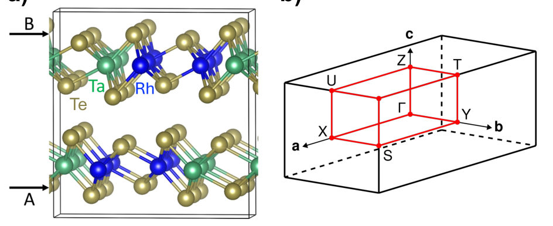
<figcaption class="paper-figure-caption"><b>Fig 1.</b> Figure 1: The crystal structure and Brillouin zone of TaRhTe4. a The crystal structure of TaRhTe4. Because it is noncentrosymmetric and layered, there are two different surface terminations, labeled by A and B here. b The Brillouin zone of TaRhTe4.</figcaption>
</figure>
<figure class="paper-figure-card">
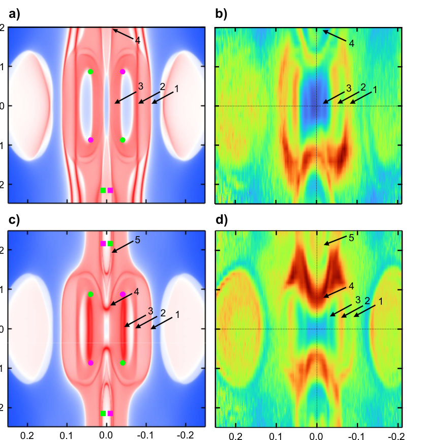
<figcaption class="paper-figure-caption"><b>Fig 2.</b> Figure 2: Fermi surfaces of TaRhTe4. a,b DFT-calculated and ARPES Fermi surfaces for termination B. The green and purple icons show the theoretical momentum positions of the Weyl points. The green WP projections have chirality -1 and the purple WP projections have chirality +1. The squares depict WP projections with predicted energy 13 meV above EF , whereas the circles represent WP projections with energy 50 meV below EF . c,d DFT-calculated and ARPES Fermi surfaces for termination A. Note that in this termination, we obtained data out to ky ≈0.25 1/˚A, whereas for termination B, we only obtained data out to ky ≈0.20 1/˚A.</figcaption>
</figure>
<figure class="paper-figure-card">
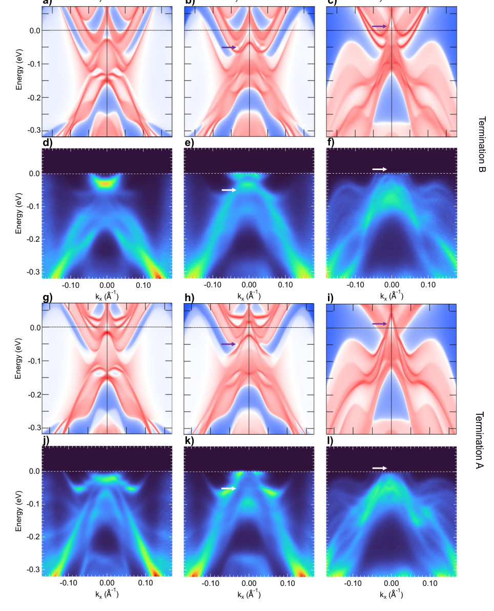
<figcaption class="paper-figure-caption"><b>Fig 3.</b> Figure 3: DFT and ARPES comparison of several energy-momentum cuts near the WP locations on each termination. a-c DFT-calculated energy-momentum cuts through termination B. The purple arrows indicate the theoretical locations of the WPs. d-f ARPES-measured energy-momentum cuts through termination B. The white arrows are placed at the same location as the purple arrows in the DFT calculations. g-i DFT-calculated energy-momentum cuts through termination B. j-l ARPES-measured energy-momentum cuts through termination B. 6</figcaption>
</figure>
<figure class="paper-figure-card">
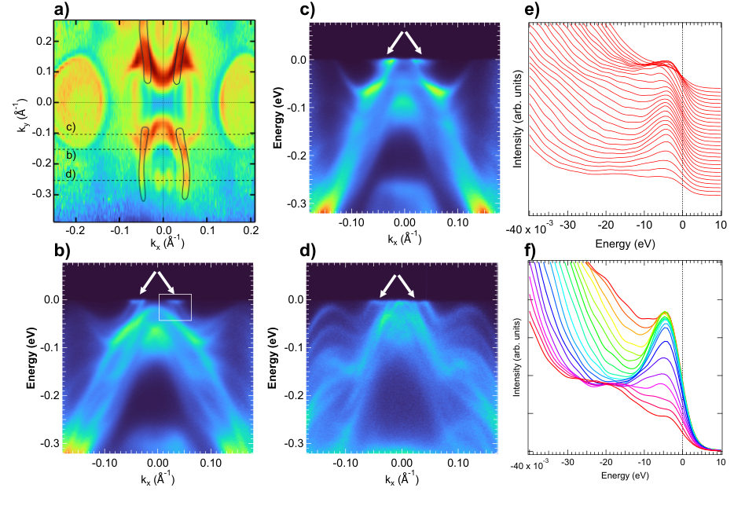
<figcaption class="paper-figure-caption"><b>Fig 4.</b> Figure 4: Flat bands in the Fermi surface of termination A. a FS of termination A, showing how the flat bands extend throughout most of the Brillouin zone. b,c,d Several energy-momentum cuts in which the flat bands are visible. The flat bands are shown by the white arrows. e EDCs of panel (b), focused on the area enclosed by the smaller white frame. f EDCs of panel (b) without offset. The individual EDCs are colored distinctly only to highlight that the peaks occur at the same energy for each EDC. The peak of the flat bands occurs approximately 4 meV below the Fermi energy.</figcaption>
</figure>
<figure class="paper-figure-card">

<figcaption class="paper-figure-caption"><b>Fig 5.</b> Figure 5: Comparison of cuts in each termination near the location of the flat bands a Termination B, where the lowercase roman numerals label the locations of the cuts shown in b i-iv. b Corresponding energy-momentum cuts. No flat bands are seen in termination B. c Termination A, which exhibits the flat bands. The lowercase roman numerals label the locations of the cuts shown in d i-iv. d Energy-momentum cuts at the locations labeled in panel c. The flat bands right below EF are indicated by the white arrows.</figcaption>
</figure>
</div>

<p><strong>Summary.</strong> This work reports the experimental detection of flat energy bands near the Fermi level in the bulk Weyl semimetal $    ext{TaRhTe}_4$. Using ARPES, the authors demonstrated that these flat bands coexist with the material's topological properties, a finding that was not predicted by standard DFT calculations. This suggests $  ext{TaRhTe}_4$ is a promising platform for studying the interplay between topology and strong electronic correlations.</p>
<p><strong>Why it may be interesting.</strong> While focused on solid-state topology, the observation of emergent electronic states (flat bands) that deviate from standard mean-field theory predictions is highly relevant to understanding strongly correlated physics in novel quantum materials.</p>
<details>
<summary>Detailed structure</summary>
<p><strong>Main problem.</strong> The primary goal was observing flat bands near the Fermi level in a nonmagnetic bulk Weyl semimetal, as such features are rare and unexpected based on initial theoretical calculations.</p>
<p><strong>Main result.</strong> The study reports clear evidence of flat bands via ARPES measurements in $ ext{TaRhTe}_4$ that coexist with its nontrivial topological character (Weyl points), despite these bands not being predicted by DFT.</p>
<p><strong>Method.</strong> The research combines Angle-Resolved Photoemission Spectroscopy (ARPES) on cleaved single crystals with Density Functional Theory (DFT) calculations to probe the electronic structure.</p>
<p><strong>Model / system.</strong> The physical system is $    ext{TaRhTe}_4$, a noncentrosymmetric van-der Waals type-II Weyl semimetal. Measurements were performed on different crystal terminations (A and B), comparing experimental data against DFT predictions.</p>
<p><strong>Key observables.</strong> Flat bands (constant energy over momentum range), Fermi surfaces, Weyl points, and Fermi arcs connecting these points.</p>
<p><strong>Important parameters / regimes.</strong> The flat band energy was observed near $4 	ext{ meV}$ below the chemical potential ($  ext{E}_F$).</p>
<p><strong>Assumptions / limitations.</strong> A key finding is that the observed flat bands were <em>not</em> predicted by DFT, suggesting a novel physical mechanism at play.</p>
<p><strong>Figures summary.</strong> Figures compare ARPES and DFT Fermi surfaces for two terminations (A and B). Specific cuts highlight the distinct presence of momentum-independent flat bands in Termination A data relative to theoretical predictions.</p>
<p><strong>Paper structure.</strong> The paper establishes the context by noting the rarity of flat bands in Weyl semimetals. It then presents comparative analysis using ARPES vs. DFT, focusing on identifying and characterizing the unexpected flat band features observed experimentally.</p>
</details>
<details>
<summary>Abstract</summary>
<p>Flat bands have been theoretically predicted for decades but have only recently been realized in quantum materials such as magic-angle twisted bilayer graphene, kagome and Lieb lattices, and rare-earth metal compounds. To date, only twisted layered materials have enabled tuning of flat-band energies near the electronic chemical potential, thereby influencing transport and thermodynamic properties. Here, we report the presence of flat bands near the chemical potential in bulk TaRhTe$_{4}$, a noncentrosymmetric van-der Waals type-II Weyl semimetal. Flat bands are rarely observed in Weyl semimetals, particularly in nonmagnetic bulk systems, and the observed flat bands were not predicted by density functional theory calculations. TaRhTe$_{4}$ therefore provides a platform in which nontrivial topology coexists with flat bands near the Fermi level, as evidenced by our angle-resolved photoemission spectroscopy measurements.</p>
</details>
<p><sub><a href="#top">↑ back to top</a></sub></p>

<p><a id="paper-2607.00340"></a></p>
<h3 id="wallis-products-from-the-four-dimensional-singular-harmonic-oscillator"><a href="http://arxiv.org/abs/2607.00340v1">Wallis Products from the Four-Dimensional Singular Harmonic Oscillator</a></h3>
<p><strong>Authors:</strong> Bin Ye, Ruitao Chen, Lei Yin<br>
<strong>Type:</strong> theory · <strong>Category:</strong> other · <strong>PDF:</strong> <a href="https://arxiv.org/pdf/2607.00340v1">https://arxiv.org/pdf/2607.00340v1</a><br>
<strong>Analysis basis:</strong> full PDF text, analyzed in chunks
<strong>Topic relevance:</strong> <code>Keldysh / 2PI / non-Gaussian methods</code> <strong>1/5</strong> · <code>driven-dissipative phase transition</code> <strong>1/5</strong> · <code>methods for driven-dissipative</code> <strong>1/5</strong></p>
<div class="figure-strip-hint">↔ Scroll figures horizontally</div>
<div class="paper-figures-scroll">
<figure class="paper-figure-card">

<figcaption class="paper-figure-caption"><b>Fig 1.</b> Low-resolution page preview, page 2</figcaption>
</figure>
<figure class="paper-figure-card">
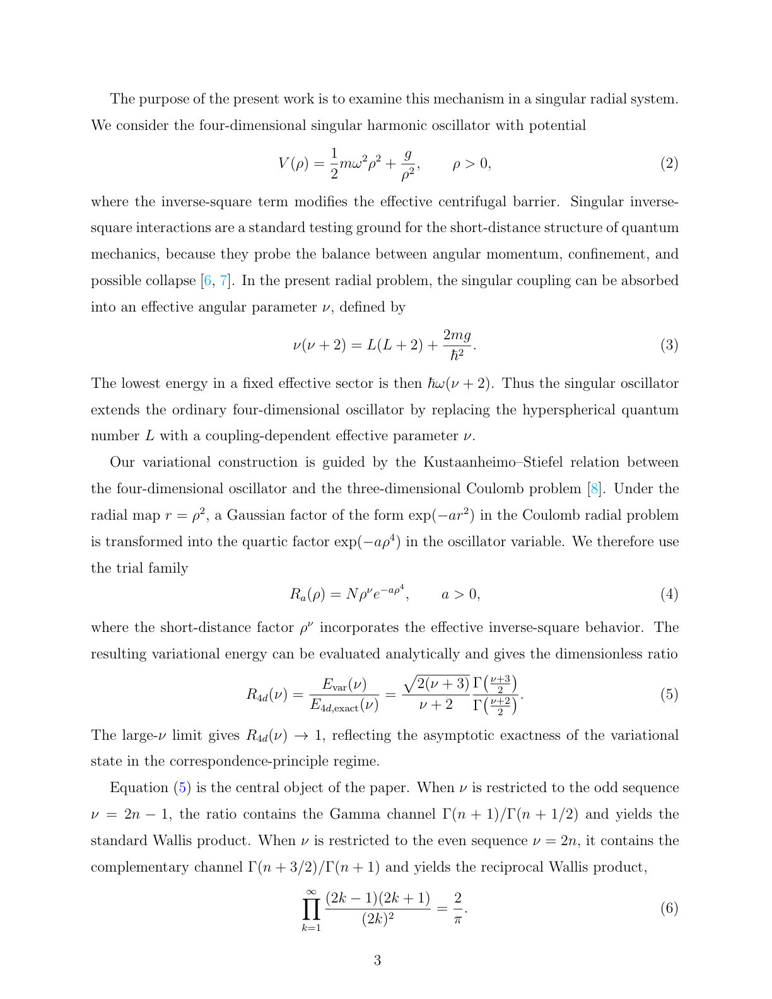
<figcaption class="paper-figure-caption"><b>Fig 2.</b> Low-resolution page preview, page 3</figcaption>
</figure>
<figure class="paper-figure-card">
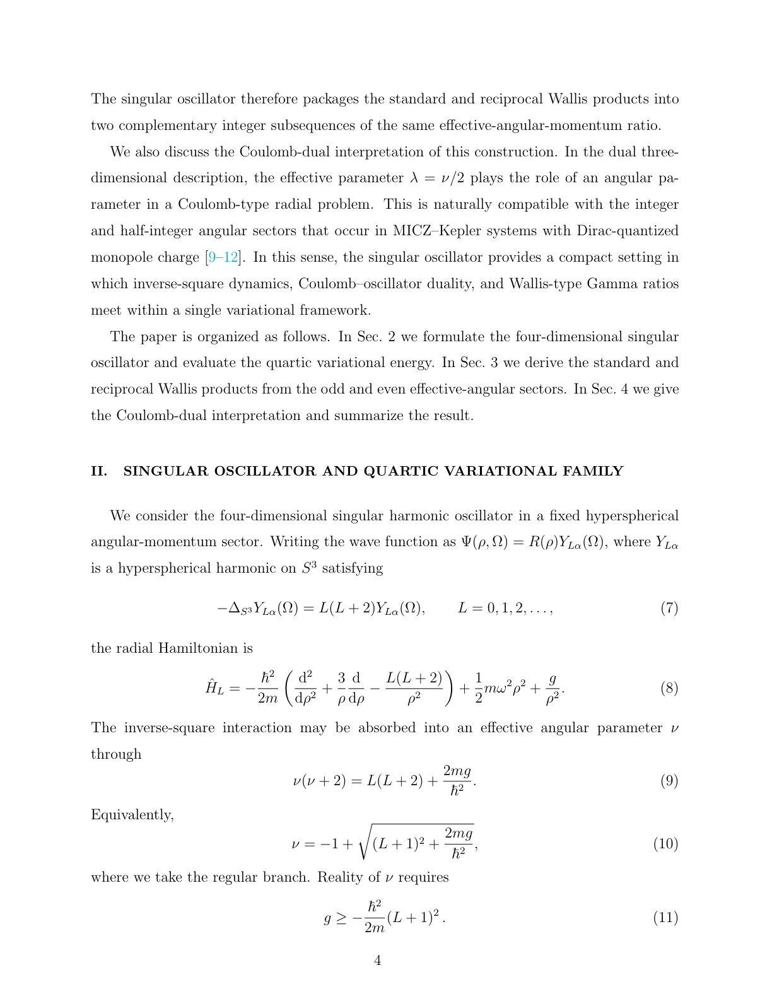
<figcaption class="paper-figure-caption"><b>Fig 3.</b> Low-resolution page preview, page 4</figcaption>
</figure>
<figure class="paper-figure-card">

<figcaption class="paper-figure-caption"><b>Fig 4.</b> Low-resolution page preview, page 5</figcaption>
</figure>
<figure class="paper-figure-card">
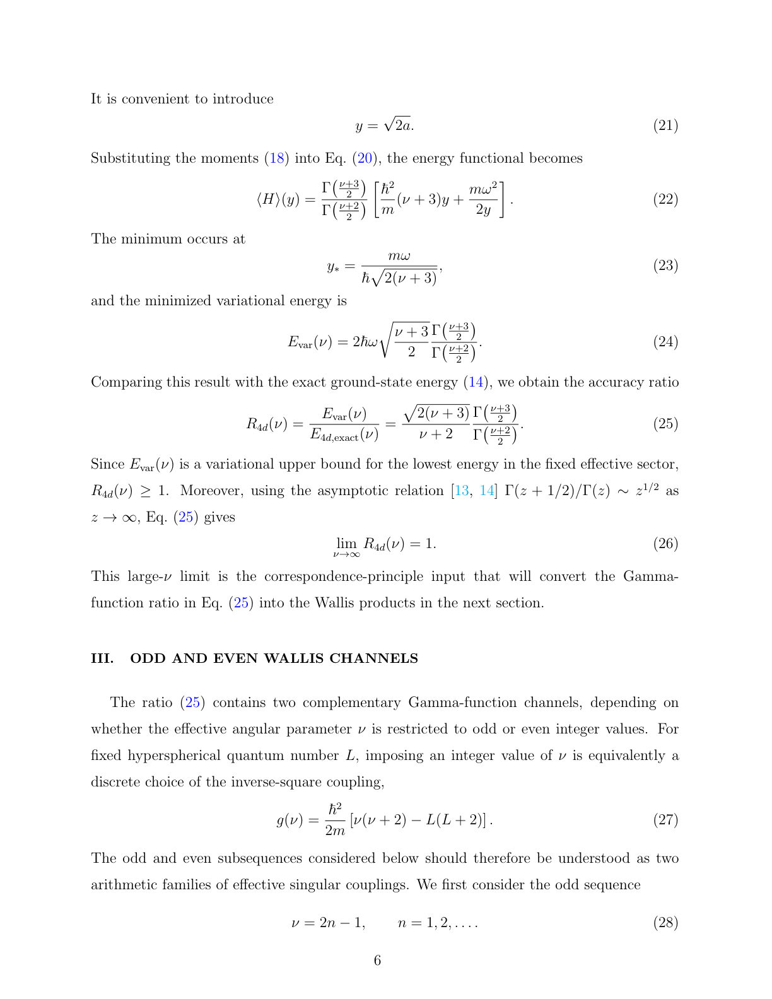
<figcaption class="paper-figure-caption"><b>Fig 5.</b> Low-resolution page preview, page 6</figcaption>
</figure>
</div>

<p><strong>Summary.</strong> This paper uses a sophisticated variational technique applied to the four-dimensional singular harmonic oscillator to derive the Wallis product. By analyzing the energy ratio in specific limits corresponding to odd and even effective angular parameters, the authors successfully connect quantum mechanical dynamics to fundamental infinite product identities. This demonstrates how deep mathematical constants can emerge from physical models involving inverse-square potentials.</p>
<p><strong>Why it may be interesting.</strong> While not directly focused on AMO systems like cold atoms or cavity QED, the use of variational methods on singular potentials and the connection between quantum mechanics and fundamental mathematical constants (like $\pi$) via spectral analysis is highly relevant theoretical physics material.</p>
<details>
<summary>Detailed structure</summary>
<p><strong>Main problem.</strong> The paper derives the Wallis product and its reciprocal using a quantum mechanical variational approach applied to a singular radial system.</p>
<p><strong>Main result.</strong> The analysis shows that both infinite products arise naturally from the large-$
u$ limit of the variational energy ratio calculated for odd ($
u=2n-1$) and even ($
u=2n$) effective angular parameters.</p>
<p><strong>Method.</strong> A variational method is employed using a quartic trial wave function family, $R_a(
ho) = N
ho^
u e^{-a
ho^4}$, to estimate the ground state energy of the singular harmonic oscillator.</p>
<p><strong>Model / system.</strong> The model is the four-dimensional singular harmonic oscillator with an inverse-square interaction term. The system's dynamics are related to the three-dimensional Coulomb problem via a Kustaanheimo–Stiefel map, allowing for duality analysis.</p>
<p><strong>Key observables.</strong> The variational energy ratio $R_{4d}(
u)$ and its limit as $
u   o \infty$.</p>
<p><strong>Important parameters / regimes.</strong> Effective angular parameter $
u$, which is restricted to odd ($
u=2n-1$) or even ($
u=2n$) sequences.</p>
<p><strong>Assumptions / limitations.</strong> The derivation relies on the validity of the variational approximation and the use of a specific quartic trial wave function family motivated by Coulomb duality.</p>
<p><strong>Paper structure.</strong> The paper establishes the effective Hamiltonian for the singular oscillator, applies the variational principle with the chosen trial function, calculates the energy ratio $R_{4d}(
u)$, and then analyzes the limits corresponding to odd and even $
u$ sequences to recover the Wallis product identities.</p>
</details>
<details>
<summary>Abstract</summary>
<p>We present a variational derivation of the Wallis product and its reciprocal from the four-dimensional singular harmonic oscillator. The inverse-square interaction is absorbed into an effective angular parameter $ν$, so that the lowest exact energy in a fixed sector is $E_{4d,\mathrm{exact}}=\hbarω(ν+2)$. Motivated by the radial Kustaanheimo--Stiefel relation $r=ρ^2$ between the four-dimensional oscillator and the three-dimensional Coulomb problem, we use the quartic trial family $R_a(ρ)=Nρ^νe^{-aρ^4}$. The minimized variational energy yields an accuracy ratio governed by adjacent Gamma functions. In the large-$ν$ semiclassical limit, this ratio approaches unity. Restricting $ν$ to the odd sequence $ν=2n-1$ gives the standard Wallis product, whereas the even sequence $ν=2n$ gives its reciprocal form. The Coulomb-dual interpretation further relates the two branches to integer and half-integer effective angular sectors in the dual Coulomb/MICZ description. The result shows that Wallis-type infinite products persist under an inverse-square deformation of the oscillator and arise from a common Gamma-function structure in radial variational dynamics.</p>
</details>
<p><sub><a href="#top">↑ back to top</a></sub></p>

<p><a id="paper-2607.00474"></a></p>
<h3 id="weak-ferromagnetism-in-nismath852math-under-nanocrystallization"><a href="http://arxiv.org/abs/2607.00474v1">Weak Ferromagnetism in NiS$_2$ under Nanocrystallization</a></h3>
<p><strong>Authors:</strong> Hayato Miyazaki, Tomohiko Yoshinaga, Ojiro Miyazaki, Akira Matsuo, Koichi Kindo, Hirofumi Ishii, Tatsuya Kawae, Tetsuya Kida, Masashi Nantoh, Yoichi Ishiwata<br>
<strong>Type:</strong> experiment · <strong>Category:</strong> other · <strong>PDF:</strong> <a href="https://arxiv.org/pdf/2607.00474v1">https://arxiv.org/pdf/2607.00474v1</a><br>
<strong>Analysis basis:</strong> full PDF text, analyzed in chunks
<strong>Topic relevance:</strong> <code>analog quantum simulation</code> <strong>1/5</strong> · <code>exotic spin models in light-matter</code> <strong>1/5</strong> · <code>spintronics-quantum-optics interface</code> <strong>1/5</strong></p>
<div class="figure-strip-hint">↔ Scroll figures horizontally</div>
<div class="paper-figures-scroll">
<figure class="paper-figure-card">
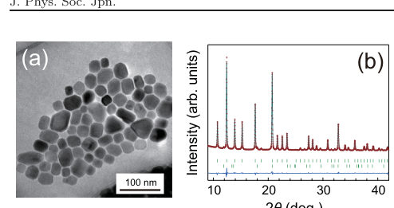
<figcaption class="paper-figure-caption"><b>Fig 1.</b> Fig. 1. Structural characterization of NiS2 NCs. (a) TEM im- age. (b) Synchrotron powder XRD pattern and Rietveld refinement profile.</figcaption>
</figure>
<figure class="paper-figure-card">

<figcaption class="paper-figure-caption"><b>Fig 2.</b> Fig. 2. ZFC and FC M/H curves of NiS2 NCs measured at H = 1000 Oe. The inset shows an enlarged view around the two antiferromagnetic anomalies; the arrow marks the TN1-related anomaly.</figcaption>
</figure>
<figure class="paper-figure-card">
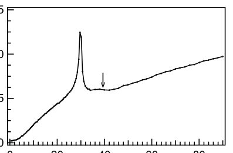
<figcaption class="paper-figure-caption"><b>Fig 3.</b> Fig. 3. Temperature dependence of C/T for NiS2 NCs. The ar- row marks the TN1-related anomaly.</figcaption>
</figure>
<figure class="paper-figure-card">

<figcaption class="paper-figure-caption"><b>Fig 4.</b> Fig. 4(c). Finite remanence and coercivity are observed below TN2, whereas the hysteretic component is essen- tially absent at 30 K. The exchange-bias field HEB and coercive field Hc were estimated from the positive and negative coercive fields, H+ c and H− c , as</figcaption>
</figure>
<figure class="paper-figure-card">

<figcaption class="paper-figure-caption"><b>Fig 5.</b> Fig. 4. Magnetic hysteresis and exchange bias in NiS2 NCs. (a) M-H curves at 4 K after ZFC and FC processes. (b) Temperature- dependent M-H curves measured after field cooling to 4 K. (c) Background-subtracted hysteresis loops. (d) Temperature depen- dences of Hc and HEB.</figcaption>
</figure>
</div>

<p><strong>Summary.</strong> This work uses nanocrystals of NiS2 to probe the origin of weak ferromagnetism. By measuring magnetization and heat capacity, the authors confirm the retention of bulk AFM transitions while observing strong hysteresis only at low temperatures. They conclude that surface uncompensated moments are responsible for this magnetism, which constrains theoretical models regarding its true nature in the bulk material.</p>
<p><strong>Why it may be interesting.</strong> The detailed study of surface effects in confined magnetic systems provides valuable insights into how dimensionality reduction modifies bulk magnetic ordering mechanisms, which is relevant for designing spintronic materials.</p>
<details>
<summary>Detailed structure</summary>
<p><strong>Main problem.</strong> The study investigates the microscopic origin of weak ferromagnetism (WF) observed in NiS2, specifically determining if it arises from homogeneous magnetic canting or localized effects at antiferromagnetic domain walls.</p>
<p><strong>Main result.</strong> The hysteretic ferromagnetic response below T_N2 is best explained by uncompensated surface moments generated where the low-temperature AFM order terminates at the nanocrystal surface. This indirectly favors a domain-wall scenario for bulk NiS2 WF.</p>
<p><strong>Method.</strong> The research employed structural characterization (XRD, TEM) and detailed magnetic measurements (ZFC/FC magnetization curves, M-H loops) on synthesized NiS2 nanocrystals.</p>
<p><strong>Model / system.</strong> The physical system is structurally well-ordered NiS2 nanocrystals. The investigation contrasts the observed magnetic behavior with theoretical models like homogeneous canting versus domain-wall localization mechanisms.</p>
<p><strong>Key observables.</strong> Retention of two-step AFM transitions, large coercivity (Hc), exchange bias (HEB), and vertical loop shifts in M-H curves below T_N2.</p>
<p><strong>Important parameters / regimes.</strong> Nanocrystal diameter ($27.0 \pm 6.5$ nm); magnetic transition temperatures ($T_{N1} \approx 39	ext{ K}$, $T_{N2} \approx 30	ext{ K}$).</p>
<p><strong>Assumptions / limitations.</strong> The analysis assumes that the observed hysteresis is dominated by surface uncompensated moments, which helps constrain theoretical models.</p>
<p><strong>Figures summary.</strong> Figures show TEM/XRD confirmation of NC structure, ZFC/FC curves showing magnetic anomalies near 30K and 40K, and M-H loops demonstrating clear hysteresis and HEB below T_N2.</p>
<p><strong>Paper structure.</strong> The paper proceeds by characterizing the structural stability of the nanocrystals, measuring the bulk-like two-step AFM transitions magnetically and thermodynamically, analyzing the temperature dependence of magnetic hysteresis features (HEB/Hc), and finally comparing these findings against theoretical models to deduce the source of weak ferromagnetism.</p>
</details>
<details>
<summary>Abstract</summary>
<p>Structurally well-ordered NiS$_2$ nanocrystals with an average diameter of $27.0 \pm 6.5$ nm retain the bulk-like two-step antiferromagnetic transitions, as shown by magnetization and heat-capacity measurements. Below the lower transition, the nanocrystals exhibit a hysteretic ferromagnetic response with large coercivity, exchange bias, and a vertical loop shift after field cooling, whereas the $M$-$H$ response just above the transition is nearly linear. These features are best explained by uncompensated surface moments generated where the low-temperature antiferromagnetic order terminates at the nanocrystal surface. The absence of a clear additional bulk-like weak-ferromagnetic component constrains homogeneous-canting models and indirectly favors a domain-wall scenario for the weak ferromagnetism of bulk NiS$_2$.</p>
</details>
<p><sub><a href="#top">↑ back to top</a></sub></p>

<p><a id="paper-2607.00463"></a></p>
<h3 id="bridging-quantum-mechanics-and-nonlinear-optics-in-raman-scattering"><a href="http://arxiv.org/abs/2607.00463v1">Bridging quantum mechanics and nonlinear optics in Raman scattering</a></h3>
<p><strong>Authors:</strong> Naoki Fukutake, Hideaki Kano<br>
<strong>Type:</strong> theory · <strong>Category:</strong> other · <strong>PDF:</strong> <a href="https://arxiv.org/pdf/2607.00463v1">https://arxiv.org/pdf/2607.00463v1</a><br>
<strong>Analysis basis:</strong> full PDF text, analyzed in chunks
<strong>Topic relevance:</strong> <code>Keldysh / 2PI / non-Gaussian methods</code> <strong>1/5</strong> · <code>correlated / nonlocal dissipation</code> <strong>1/5</strong></p>
<div class="figure-strip-hint">↔ Scroll figures horizontally</div>
<div class="paper-figures-scroll">
<figure class="paper-figure-card">
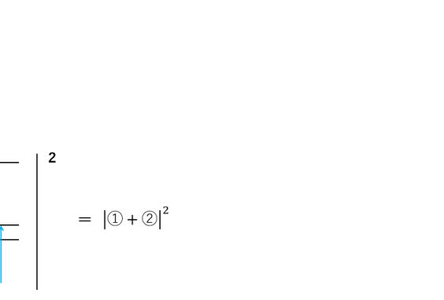
<figcaption class="paper-figure-caption"><b>Fig 1.</b> Fig. 1. Two types of processes involved in KHD theory: ① (rotating term) a process that passes through an intermediate state where one incident photon is absorbed, and ② (counter-rotating term) a process that passes through an intermediate state where one scattered photon is emitted.</figcaption>
</figure>
<figure class="paper-figure-card">

<figcaption class="paper-figure-caption"><b>Fig 2.</b> Figure 1 describes the first term (rotating term) ① and the second term (counter- rotating term) ② in the square of the modulus in Eq. (1). The first term is much larger than the second term. For the later discussion (DISCUSSION A), we expand the square of the modulus, where Eq. (1) is decomposed into four terms, i.e., a large term (𝑇1), two small terms (cross terms 𝑇2 and 𝑇3), and a negligible term (𝑇4), as presented below.</figcaption>
</figure>
<figure class="paper-figure-card">
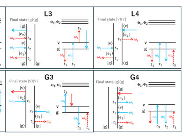
<figcaption class="paper-figure-caption"><b>Fig 3.</b> Fig. 2. Double-sided Feynman diagrams and energy level diagrams describing L1–L4 in sRL and G1–G4 in sRG. Dotted arrows mean the vacuum fields, solid arrows represent the pump fields, and double-line arrows denote the signal field. On the bra side (right side) in double-sided Feynman diagram, the arrows indicate the negative-frequency light going in and out of the target molecules, which corresponds to the positive-frequency light going out and in. Although the signal field is depicted in our diagram style to show the final state of molecules, the arrow for the signal field is not necessary to calculate the nonlinear susceptibility. Also in the energy level diagram, the corresponding arrows...</figcaption>
</figure>
<figure class="paper-figure-card">

<figcaption class="paper-figure-caption"><b>Fig 4.</b> Fig. 3. A relationship between the cross sections. (a) 𝜎KHD/𝛺 derived from KHD dispersion formula. (b) 𝜎sRG/𝛺 and 𝜎sRL/𝛺 derived from nonlinear optical susceptibility approach.</figcaption>
</figure>
<figure class="paper-figure-card">
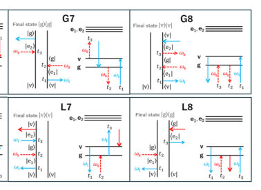
<figcaption class="paper-figure-caption"><b>Fig 5.</b> Fig. 4. Double-sided Feynman diagrams and energy level diagrams describing G5–G8 in sRG and L5–L8 in sRL.</figcaption>
</figure>
</div>

<p><strong>Summary.</strong> The paper unifies the description of spontaneous Raman scattering by bridging quantum mechanics (KHD theory) and nonlinear optics ($\chi^{(3)}$). It rigorously derives the cross-section using vacuum field concepts, predicting both standard gain (sRG) and a novel loss mechanism (sRL). The ultimate achievement is demonstrating perfect analytical agreement between these two powerful theoretical descriptions.</p>
<p><strong>Why it may be interesting.</strong> This work provides a deep theoretical unification of two major frameworks—quantum electrodynamics and nonlinear optics—for a fundamental process like Raman scattering, offering rigorous predictions for vacuum-seeded optical phenomena.</p>
<details>
<summary>Detailed structure</summary>
<p><strong>Main problem.</strong> To develop a theoretical framework that fundamentally bridges quantum-mechanical and nonlinear-optical approaches for spontaneous Raman scattering.</p>
<p><strong>Main result.</strong> The authors establish perfect analytical agreement between the two descriptions, predicting a novel phenomenon called "spontaneous Raman loss" (sRL).</p>
<p><strong>Method.</strong> The study uses perturbation theory, comparing results derived from traditional Kramers-Heisenberg-Dirac (KHD) theory with those from nonlinear optical susceptibility ($\chi^{(3)}$) calculations involving vacuum field expectation values.</p>
<p><strong>Model / system.</strong> The system is spontaneous Raman scattering, modeled using quantum electrodynamics formalism and considering molecular vibrational quanta interacting with incident and scattered photons. The analysis involves comparing Hilbert space (quantum mechanical) and Liouville space (nonlinear optical) descriptions.</p>
<p><strong>Key observables.</strong> Spontaneous Raman cross-section, Spontaneous Raman Gain (sRG), Spontaneous Raman Loss (sRL), and the third-order nonlinear susceptibility ($\chi^{(3)}$).</p>
<p><strong>Important parameters / regimes.</strong> Third-order nonlinear susceptibility ($\chi^{(3)}$), molecular density ($N$), vibrational frequency ($\omega_{vib}$), damping factor ($\Gamma$).</p>
<p><strong>Assumptions / limitations.</strong> The analysis assumes that unobservable terms (e.g., L5–L8, G5–G8) are physically prohibited in the spontaneous scattering regime; it also utilizes approximations like $\gamma 	o +0$ for comparison with KHD theory.</p>
<p><strong>Figures summary.</strong> Figures illustrate Feynman diagrams detailing sRL and sRG processes, and a table maps quantum mechanical terms to specific nonlinear susceptibility components, showing correspondence between different theoretical formalisms.</p>
<p><strong>Paper structure.</strong> The paper progresses by first defining the problem using both KHD and nonlinear optics approaches. It then calculates sRG/sRL via vacuum field expectation values, establishes correspondences between KHD terms (T1-T4) and $\chi^{(3)}$ components ($G1-L4$), and finally generalizes this connection using a negative-frequency-assisted quantum mechanical framework to achieve perfect agreement.</p>
</details>
<details>
<summary>Abstract</summary>
<p>We present a theoretical framework for spontaneous Raman scattering that fundamentally bridges quantum-mechanical and nonlinear-optical approaches. By conceptualizing spontaneous Raman scattering as a stimulated Raman gain or loss event seeded by the quantum vacuum field, we rigorously derive the spontaneous Raman cross-section directly from the third-order nonlinear susceptibility. Crucially, this framework predicts the existence of a hitherto unrecognized phenomenon: "spontaneous Raman loss" (sRL), which acts as the vacuum-seeded counterpart to stimulated Raman loss, complementing traditional spontaneous Raman scattering (spontaneous Raman gain, sRG). Furthermore, we establish a rigorous connection to the traditional Kramers-Heisenberg-Dirac (KHD) theory, revealing that the spontaneous process is governed by interference before a detector between the signal field emitted from molecules and the vacuum field itself that stimulates the molecules. This insight uncovers a direct correspondence between the sRG susceptibility and the rotating/counter-rotating interference terms in the KHD formula. Ultimately, we extend the foundational KHD theory by incorporating previously unrecognized essential terms, achieving perfect analytical agreement between the quantum mechanical and nonlinear optical descriptions of Raman scattering.</p>
</details>
<p><sub><a href="#top">↑ back to top</a></sub></p>

<p><a id="paper-2607.01193"></a></p>
<h3 id="non-signaling-assistance-in-prepare-and-measure-scenarios-with-classical-communication"><a href="http://arxiv.org/abs/2607.01193v1">Non-signaling assistance in prepare-and-measure scenarios with classical communication</a></h3>
<p><strong>Authors:</strong> José Nogueira, Carlos Vieira, Lucas E. A. Porto, Lucas Pollyceno, Rafael Rabelo, Otfried Gühne<br>
<strong>Type:</strong> theory · <strong>Category:</strong> quantum information and computing · <strong>PDF:</strong> <a href="https://arxiv.org/pdf/2607.01193v1">https://arxiv.org/pdf/2607.01193v1</a><br>
<strong>Analysis basis:</strong> full PDF text, analyzed in chunks
<strong>Topic relevance:</strong> <code>entanglement &amp; information structure</code> <strong>1/5</strong> · <code>quantum measurements</code> <strong>1/5</strong></p>
<div class="figure-strip-hint">↔ Scroll figures horizontally</div>
<div class="paper-figures-scroll">
<figure class="paper-figure-card">

<figcaption class="paper-figure-caption"><b>Fig 1.</b> FIG. 1. Schematic of a prepare-and-measure scenario. Alice en- codes her input x into a preparation device, which emits either a classical or quantum system sent to Bob. Bob receives the system, chooses an input y for his measurement device, and produces an output b. The devices may share correlations, which can be clas- sical (shared randomness λ) or quantum (arising from a shared entangled state ρAB).</figcaption>
</figure>
<figure class="paper-figure-card">

<figcaption class="paper-figure-caption"><b>Fig 2.</b> FIG. 2. Schematic representation of a prepare-and-measure sce- nario with non-adaptive non-signaling assistance, according to the definition in Eq. (6). Alice and Bob share an arbitrary non- signaling box in the Bell scenario (nX, nA; nY , nβ). Alice inputs x into her share of the box, obtains outcome a, and communicates it to Bob. Bob independently inputs y into his share of the box and obtains β. Finally, he post-processes a,β to produce the output b.</figcaption>
</figure>
<figure class="paper-figure-card">

<figcaption class="paper-figure-caption"><b>Fig 3.</b> FIG. 3. Schematic representation of a prepare-and-measure sce- nario with adaptive non-signaling assistance, according to Eq. (8). Alice and Bob share an arbitrary non-signaling box in the Bell sce- nario (nX, nA; nY nA, nB). Alice inputs x into her share of the box, obtains outcome a, and communicates it to Bob. Bob then inputs the composite setting (y, a) into his share of the box and obtains the output b. The protocol is adaptive because Bob’s input to the shared box depends on the message received from Alice.</figcaption>
</figure>
</div>

<p><strong>Summary.</strong> The paper provides a detailed comparison between adaptive and non-adaptive Non-Signaling (NS) assistance in Prepare-and-Measure communication models. It establishes that while NS assistance can simulate quantum qudit transmission classically, any genuine advantage gained by adaptivity over non-adaptivity is restricted to highly specific scenarios. The findings help delineate the true power of different types of non-local correlations.</p>
<p><strong>Why it may be interesting.</strong> This work rigorously quantifies the limits of communication protocols using non-local correlations, providing fundamental boundaries for what can be achieved with limited resources like classical messages and NS assistance, which is crucial for understanding device-independent quantum information tasks.</p>
<details>
<summary>Detailed structure</summary>
<p><strong>Main problem.</strong> The paper investigates the operational advantage of using adaptive versus non-adaptive Non-Signaling (NS) assistance in Prepare-and-Measure (PM) quantum communication scenarios.</p>
<p><strong>Main result.</strong> It proves that any genuine adaptive advantage over non-adaptive NS assistance can be traced back to scenarios where the receiver has no measurement choice, thus ruling out genuinely multi-setting advantages found in entanglement-assisted protocols.</p>
<p><strong>Method.</strong> The authors characterize the sets of achievable correlations by deriving necessary and sufficient conditions based on input-discrimination inequalities derived from structural properties of non-signaling boxes.</p>
<p><strong>Model / system.</strong> The model is a Prepare-and-Measure (PM) scenario $(n_X; n_Y, n_B)$, where Alice prepares a message $a$ based on input $x$, and Bob measures using input $y$ to produce output $b$. The analysis compares correlations achievable with classical communication, non-adaptive NS assistance ($  ext{NSNA}$), and adaptive NS assistance ($    ext{NSA}$).</p>
<p><strong>Key observables.</strong> The set of achievable correlation functions $q(b|x, y)$, and the maximum discrimination score $\max_{x \in [n_X]} q(b|x, y)$.</p>
<p><strong>Important parameters / regimes.</strong> Message dimension ($n_A$), input sizes ($n_X, n_Y$), and output size ($n_B$). The comparison hinges on whether $n_A$ is large relative to these dimensions.</p>
<p><strong>Assumptions / limitations.</strong> The analysis relies heavily on reducing the general PM scenario characterization to fixed-$y$ sub-behaviors (Theorem 3) and comparing structural constraints derived from NS boxes.</p>
<p><strong>Figures summary.</strong> Figure 1 schematically illustrates the basic PM setup. Other figures detail the mathematical structures for non-adaptive and adaptive NS assistance, showing how inputs $x, y$ lead to an intermediate shared resource $\alphaeta$ or a message $a$.</p>
<p><strong>Paper structure.</strong> The paper progresses by first establishing the general framework of achievable correlations using various resources (classical, EA, NS). It then focuses on characterizing non-adaptive ($ ext{NSNA}$) and adaptive ($    ext{NSA}$) NS assistance separately. The core is comparing these two sets to pinpoint exactly when $    ext{NSA}$ provides a strict advantage over $    ext{NSNA}$.</p>
</details>
<details>
<summary>Abstract</summary>
<p>Extracting the full power of non-local correlations in prepare-and-measure (PM) scenarios requires precise control over the timing and structure of the receiver's measurements. Indeed, recent developments in entanglement-assisted classical communication scenarios have shown that adaptive strategies-where the receiver uses the transmitted message to guide their measurement choice-can outperform standard non-adaptive protocols. Moving beyond quantum theory, however, the ultimate limits of such advantages remain largely unexplored. In this work, we thoroughly study adaptive and non-adaptive non-signaling (NS) assistance in PM scenarios with classical communication. We provide simple characterizations of the sets of behaviors that can be realized using both non-adaptive and adaptive NS assistance in arbitrary PM scenarios. As a consequence, we show that non-adaptive NS assistance is already strong enough to reproduce quantum communication with the same message dimension: the transmission of a qudit can be simulated by a classical dit assisted non-adaptively by NS correlations. We then compare adaptive and non-adaptive NS assistance. We prove that any adaptive NS advantage can be traced back to scenarios in which the receiver has no measurement choice, ruling out the genuinely multi-setting advantages found in entanglement-assisted quantum protocols. Finally, we identify all PM scenarios where adaptive NS strategies provide a strict advantage over non-adaptive ones.</p>
</details>
<p><sub><a href="#top">↑ back to top</a></sub></p>

<p><a id="paper-2607.00575"></a></p>
<h3 id="reducing-quantum-resources-for-adapt-vqe-via-plateau-operator-elimination-and-correlated-mean-field-downfolding"><a href="http://arxiv.org/abs/2607.00575v1">Reducing quantum resources for ADAPT-VQE via plateau-operator elimination and correlated mean-field downfolding</a></h3>
<p><strong>Authors:</strong> Phuoc Minh Vo, Thai Cong Ngoc Vu, Thien Ngoc Tran, Hoang Thanh Nguyen, Lan Nguyen Tran<br>
<strong>Type:</strong> theory · <strong>Category:</strong> strongly correlated electrons · <strong>PDF:</strong> <a href="https://arxiv.org/pdf/2607.00575v1">https://arxiv.org/pdf/2607.00575v1</a><br>
<strong>Analysis basis:</strong> full PDF text, analyzed in chunks
<strong>Topic relevance:</strong> <code>Keldysh / 2PI / non-Gaussian methods</code> <strong>1/5</strong> · <code>analog quantum simulation</code> <strong>1/5</strong></p>
<div class="figure-strip-hint">↔ Scroll figures horizontally</div>
<div class="paper-figures-scroll">
<figure class="paper-figure-card">
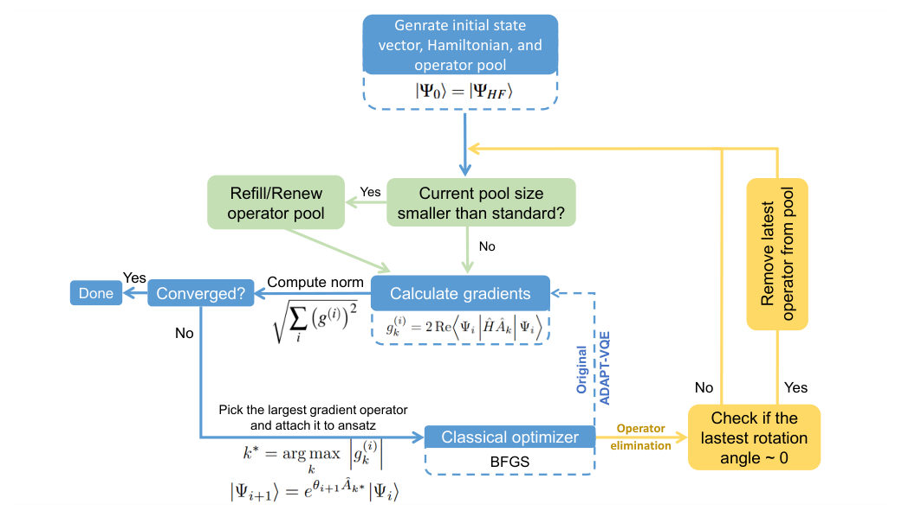
<figcaption class="paper-figure-caption"><b>Fig 1.</b> FIG. 1: The plateau-operator elimination is incorporated into the original ADAPT-VQE workflow. After the classical optimization, the elimination scheme is applied to remove operators with vanishing parameters.</figcaption>
</figure>
<figure class="paper-figure-card">
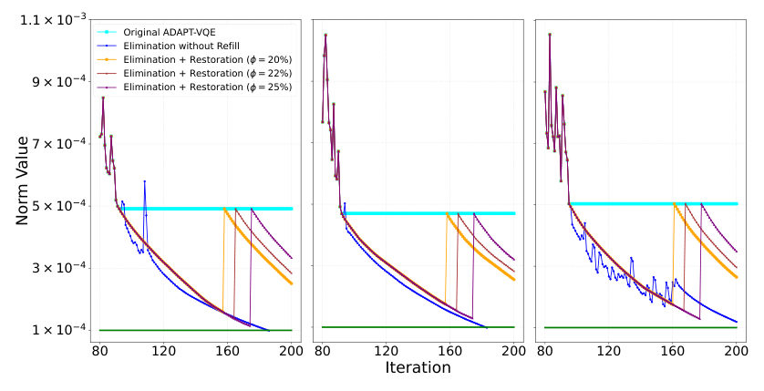
<figcaption class="paper-figure-caption"><b>Fig 2.</b> FIG. 2: Gradient norm convergence for the hydrogen chain at r = 2.25 ˚A (left), 2.55 ˚A (middle), and 2.85 ˚A (right). There are three thresholds of elimination, at which the pool is restored: ϕ = 20% (orange), 22% (purple), and 25% (pink). The horizontal green line indicates the convergence threshold ϵ = 10−4.</figcaption>
</figure>
<figure class="paper-figure-card">

<figcaption class="paper-figure-caption"><b>Fig 3.</b> FIG. 3: CNOT gate counts for ADAPT-VQE with and without operator elimination at different bond lengths of H6 chain, H6 ring, and H6 lattice.</figcaption>
</figure>
<figure class="paper-figure-card">

<figcaption class="paper-figure-caption"><b>Fig 4.</b> FIG. 4: Number of operators and number of CNOT gates for ADAPT-VQE with the elimination scheme using different orbital bases (HF and OBMP2) at various bond lengths of H6 chain.</figcaption>
</figure>
<figure class="paper-figure-card">

<figcaption class="paper-figure-caption"><b>Fig 5.</b> FIG. 5: Convergence of the gradient norm and energy with respect to iterations for r = 2.25 and 2.45 ˚A of H6 chain.</figcaption>
</figure>
</div>

<p><strong>Summary.</strong> The paper improves the ADAPT-VQE algorithm, which is used for quantum chemistry simulations, by implementing an operator elimination strategy that prunes redundant terms from the ansatz pool. Furthermore, they enhance accuracy by coupling this method with a One-Body Downfolding Framework (OBDF) to incorporate dynamic correlation effects into the active space Hamiltonian. This combination significantly reduces required quantum resources while achieving energies closer to exact reference values.</p>
<p><strong>Why it may be interesting.</strong> This work directly addresses resource scaling in quantum simulation by providing a practical heuristic (operator elimination) to keep variational ansätze shallow while simultaneously improving accuracy via advanced embedding techniques (OBDF), making it highly relevant for near-term quantum hardware applications.</p>
<details>
<summary>Detailed structure</summary>
<p><strong>Main problem.</strong> The primary challenge is efficiently computing ground-state electronic structure energies for quantum chemistry and condensed matter systems, which suffer from the exponential scaling of exact methods like FCI.</p>
<p><strong>Main result.</strong> The combination of operator elimination in ADAPT-VQE with One-Body Downfolding (OBDF) yields energy estimates significantly closer to high-accuracy reference methods than standard ADAPT-VQE within the same active space.</p>
<p><strong>Method.</strong> They propose an operator elimination scheme for ADAPT-VQE that removes non-contributing operators whose parameters vanish during optimization. This is combined with OBDF, which replaces the bare Hamiltonian in the active space with a correlated effective Hamiltonian.</p>
<p><strong>Model / system.</strong> The work models molecular systems and materials using fermionic Hamiltonians. Benchmarking was performed on $\ce{H_6}$ chains, lattices, rings, and the $\ce{N_2}$ molecule, utilizing both Hartree-Fock (HF) and OBMP2 derived orbitals.</p>
<p><strong>Key observables.</strong> Ground-state energy ($E_0$), circuit depth (CNOT gate counts), iteration count, and gradient norm convergence.</p>
<p><strong>Important parameters / regimes.</strong> The elimination threshold ($\delta$) for vanishing parameters; the fraction of eliminated operators ($\phi$); and the active space definition derived from OBMP2.</p>
<p><strong>Assumptions / limitations.</strong> The permanent elimination scheme is preferred over pool restoration because restoration introduces optimization instabilities. The use of OBDF assumes that dynamic correlation effects outside the active space can be effectively captured by a one-body approximation.</p>
<p><strong>Figures summary.</strong> Figures illustrate the workflow incorporating plateau-operator elimination into ADAPT-VQE, showing significant reductions in CNOT gate counts across $\ce{H_6}$ systems. Other figures compare energy convergence and Potential Energy Surfaces (PES) for various molecules ($\ce{N_2}$, $\ce{H_6}$) using different methods.</p>
<p><strong>Paper structure.</strong> The paper first introduces the limitations of standard VQE/ADAPT-VQE, then details the novel operator elimination technique to stabilize optimization and reduce circuit depth. Subsequently, it integrates this with the OBDF framework to incorporate external correlation effects, benchmarking performance across various molecular models.</p>
</details>
<details>
<summary>Abstract</summary>
<p>Adaptive Derivative-Assembled Problem-Tailored variational quantum eigensolvers (ADAPT-VQE) represent one of the most promising approaches for quantum chemistry on near-term quantum devices. However, their optimization is slow and may stall due to vanishing parameters and redundant operators in the ansatz. In this work, we propose a simple strategy of operator elimination that removes non-contributing operators from the pool once they are detected, enabling the optimization to continue progressing toward convergence. We examine two variants, with and without pool restoration after elimination, and find that the former converges more smoothly and faster than the latter and the standard ADAPT-VQE. To capture dynamical correlations between the active space and its environment, we combine ADAPT-VQE with our recently developed downfolding approach, the one-body downfolding framework (OBDF). In OBDF, the bare molecular Hamiltonian in the active space is replaced by a correlated effective Hamiltonian that incorporates dynamical correlation effects outside the active space. We benchmark our implementation on a linear \ce{H_6} chain, an \ce{H_6} lattice, an \ce{H_6} ring, and the \ce{N_2} molecule using the OpenFermion simulator. Our results show that operator elimination significantly reduces circuit depth and iteration count, and that OBDF-ADAPT-VQE yields energies closer to the full configuration interaction (FCI) reference than the standard approach within the same active space.</p>
</details>
<p><sub><a href="#top">↑ back to top</a></sub></p>

<p><a id="paper-2607.00961"></a></p>
<h3 id="bridging-quantum-computing-paradigms-toward-semiconductor-yield-a-controlled-cv-versus-dv-comparison-on-wafer-map-defect-classification"><a href="http://arxiv.org/abs/2607.00961v1">Bridging Quantum Computing Paradigms toward Semiconductor Yield: A Controlled CV-versus-DV Comparison on Wafer-Map Defect Classification</a></h3>
<p><strong>Authors:</strong> Yeonhong Kim, Jonghyeok Im, Monu Nath Baitha, Kyoungsik Kim<br>
<strong>Type:</strong> both · <strong>Category:</strong> quantum information and computing · <strong>PDF:</strong> <a href="https://arxiv.org/pdf/2607.00961v1">https://arxiv.org/pdf/2607.00961v1</a><br>
<strong>Analysis basis:</strong> full PDF text, analyzed in chunks
<strong>Topic relevance:</strong> <code>QC/QI experiment</code> <strong>1/5</strong></p>
<div class="figure-strip-hint">↔ Scroll figures horizontally</div>
<div class="paper-figures-scroll">
<figure class="paper-figure-card">
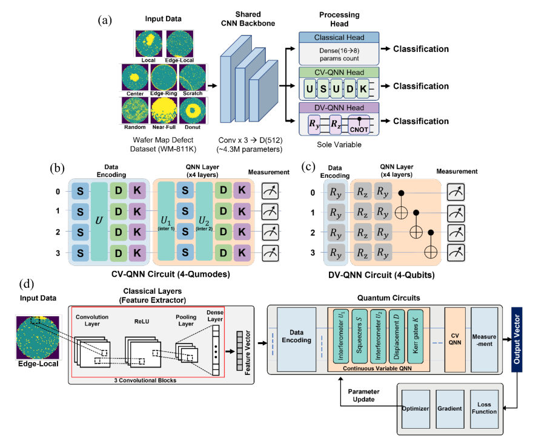
<figcaption class="paper-figure-caption"><b>Fig 1.</b> Fig. 1 Controlled protocol and architectures - (a) shared-backbone protocol with three interchangeable heads; (b) CV-QNN</figcaption>
</figure>
<figure class="paper-figure-card">

<figcaption class="paper-figure-caption"><b>Fig 2.</b> Fig. 2 Performance and training dynamics - (a) accuracy and macro-F1 for Classical, CV-4m, and DV-4q with quantum-</figcaption>
</figure>
<figure class="paper-figure-card">

<figcaption class="paper-figure-caption"><b>Fig 3.</b> Fig. 3 Confusion matrices, CV-4m vs. DV-4q - (a) representative wafer maps from the Edge-Loc (top) and Scratch (bottom)</figcaption>
</figure>
<figure class="paper-figure-card">

<figcaption class="paper-figure-caption"><b>Fig 4.</b> Fig. 4 Input-noise robustness - test accuracy under Gaussian input noise σ. (a) CV-QNN (4m, 3m) and the classical CNN: CV</figcaption>
</figure>
<figure class="paper-figure-card">

<figcaption class="paper-figure-caption"><b>Fig 5.</b> Fig. 5 IBM quantum hardware validation - (a) simulation vs. hardware accuracy for DV-QNN at three depths (ibm_yonsei,</figcaption>
</figure>
</div>

<p><strong>Summary.</strong> This paper compares Continuous-Variable (CV) and Discrete-Variable (DV) Quantum Neural Networks for classifying defects on semiconductor wafers. By keeping the feature extraction backbone constant, the authors demonstrate that CV-QNNs significantly outperform DV-QNNs, especially when capturing fine spatial details like Edge-Loc defects. The superior performance of CV is attributed to its continuous phase-space encoding and structured layer design.</p>
<p><strong>Why it may be interesting.</strong> It provides a concrete, application-driven benchmark comparing two major QML approaches (CV vs DV) in a domain relevant to advanced hardware manufacturing, offering insights into the necessary structural properties for quantum feature extraction.</p>
<details>
<summary>Detailed structure</summary>
<p><strong>Main problem.</strong> The study aims to determine which quantum computing paradigm, Continuous-Variable (CV) or Discrete-Variable (DV), is superior for classifying wafer-map defects in semiconductor yield assessment.</p>
<p><strong>Main result.</strong> The CV head consistently outperforms the DV head, showing a significant advantage (e.g., 79.7% vs 61.6% accuracy at 4 qumodes/qubits) due to its structured design and continuous phase-space encoding.</p>
<p><strong>Method.</strong> A controlled comparison was performed by attaching interchangeable quantum heads (CV-QNN or DV-QNN) to a shared, fixed convolutional backbone for feature extraction on the WM-811K dataset.</p>
<p><strong>Model / system.</strong> The system is wafer-map defect classification using eight classes. The models compare CV-QNNs (using Gaussian/non-Gaussian gates) against DV-QNNs (using parameterized rotations and CNOT entanglers).</p>
<p><strong>Key observables.</strong> Classification accuracy, Edge-Loc class recall (CV: 0.66 vs DV: &lt;=0.05), and performance degradation under varying input noise ($\sigma$).</p>
<p><strong>Important parameters / regimes.</strong> Circuit size (3, 4, 8 qumodes/qubits), Fock cutoff ($d=2$), and the classical baseline accuracy (85.0%).</p>
<p><strong>Assumptions / limitations.</strong> The comparison isolates the quantum head as the sole variable; CV advantage is attributed to structure and continuous encoding rather than just Hilbert-space dimensionality at $d=2$.</p>
<p><strong>Figures summary.</strong> Figures compare model architectures, training dynamics (loss/accuracy vs. epoch), and performance robustness against increasing input noise ($\sigma$) for both CV and DV heads.</p>
<p><strong>Paper structure.</strong> The paper establishes the problem context, details the controlled architectural comparison (shared CNN backbone feeding interchangeable quantum heads), presents quantitative results showing CV superiority on specific defect classes, and concludes by attributing this advantage to continuous encoding structure.</p>
</details>
<details>
<summary>Abstract</summary>
<p>Realizing quantum neural networks (QNNs) in industry requires knowing which quantum computing paradigm suits which task. Motivated by AI accelerators and high-bandwidth memory, where die stacking makes wafer-level defect screening central to yield, we study WM-811K wafer-map defect classification (eight classes), comparing the dominant paradigms, continuous-variable (CV) and discrete-variable (DV), under controlled conditions. To isolate the quantum circuit as the sole variable, a shared convolutional backbone (~4.3M parameters) feeds interchangeable heads (classical dense, CV-QNN, or DV-QNN) as the only structural difference; each quantum head is scaled over three sizes (3, 4, 8 qumodes/qubits). The CV head consistently outperforms the DV head: at four qumodes/qubits it reaches 79.7 +/- 1.8% accuracy versus 61.6 +/- 1.4%, a non-overlapping 18-point gap. The advantage is sharpest on the spatially localized Edge-Loc class, easily confused with Scratch, which CV recovers with recall 0.66 +/- 0.06 while DV fails at every size (&lt;=0.05), showing the structured CV layer better captures fine spatial distinctions between defect types. Training curves show the DV limitation is a representational-capacity ceiling, not an optimization failure; at the Fock cutoff used here (d = 2) the CV advantage reflects two intrinsic properties, a structured, neural-network-analogue layer and continuous phase-space encoding, not Hilbert-space dimensionality. On IBM hardware, DV accuracy holds at shallow depth, degrading only at the deepest circuit. Both quantum heads remain below the classical baseline (85.0%), but the controlled setting isolates where a structured head already helps and, as noise and scale improve, which paradigm can deliver practical advantage.</p>
</details>
<p><sub><a href="#top">↑ back to top</a></sub></p>

<p><a id="paper-2607.00715"></a></p>
<h3 id="gsoqdc-a-gui-driven-interactive-framework-for-end-to-end-simulation-of-optical-quantum-data-centers"><a href="http://arxiv.org/abs/2607.00715v1">GsOQDC: A GUI-Driven Interactive Framework for End-to-End Simulation of Optical Quantum Data Centers</a></h3>
<p><strong>Authors:</strong> Seyed Navid Elyasi, Sima Bahrani, Rui Wang, Dimitra Simeonidou, Paolo Monti, Rui Lin<br>
<strong>Type:</strong> theory · <strong>Category:</strong> quantum information and computing · <strong>PDF:</strong> <a href="https://arxiv.org/pdf/2607.00715v1">https://arxiv.org/pdf/2607.00715v1</a><br>
<strong>Analysis basis:</strong> full PDF text, analyzed in chunks
<strong>Topic relevance:</strong> <code>methods for driven-dissipative</code> <strong>1/5</strong></p>
<div class="figure-strip-hint">↔ Scroll figures horizontally</div>
<div class="paper-figures-scroll">
<figure class="paper-figure-card">

<figcaption class="paper-figure-caption"><b>Fig 1.</b> Fig. 1: GsOQDC workflow and software architecture. The platform integrates the end-to-end DQC workflow, enabling users to progress from quantum-circuit design and optical-network configuration to distributed compilation, scheduling, execution, and performance evaluation within a single graphical environment.</figcaption>
</figure>
<figure class="paper-figure-card">
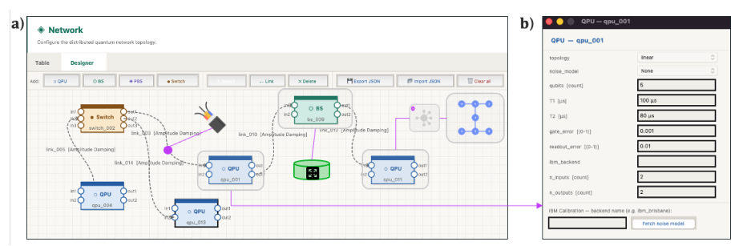
<figcaption class="paper-figure-caption"><b>Fig 2.</b> Fig. 2: GsOQDC Network Designer. (a) Interactive topology editor for constructing Optical Quantum Data Center architectures using QPUs, optical components, and communication links. (b) Component configuration panel, accessible via right-click, allowing users to modify hardware and noise parameters, including qubit properties, gate errors, coherence times, readout errors, and device-specific calibration data. Together, these capabilities enable realistic, cross-layer modeling of distributed quantum-computing infrastructures.</figcaption>
</figure>
<figure class="paper-figure-card">
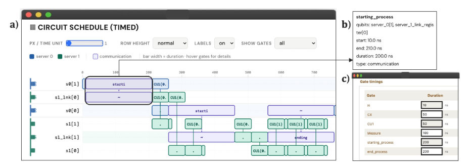
<figcaption class="paper-figure-caption"><b>Fig 3.</b> Fig. 3: Distributed-workload scheduling in GsOQDC. (a) Interactive Gantt-chart visualization showing local operations, remote-gate execution, and communication events across multiple QPUs. (b) Contextual information panel displayed when hovering over a scheduled operation, providing timing, duration, resource, and process details. (c) User-configurable gate and process timing parameters.</figcaption>
</figure>
</div>

<p><strong>Summary.</strong> The paper introduces GsOQDC, an open-source GUI framework designed to simulate end-to-end operations in Optical Quantum Data Centers (OQDCs). It integrates quantum circuit design, network topology definition, compilation, and scheduling into a single platform. This allows researchers to quantitatively evaluate how physical network impairments affect the performance of distributed quantum algorithms.</p>
<p><strong>Why it may be interesting.</strong> This work is highly relevant as it provides a crucial simulation tool for understanding the practical architectural limitations of scaling quantum computation by explicitly coupling quantum circuit requirements with realistic optical network constraints.</p>
<details>
<summary>Detailed structure</summary>
<p><strong>Main problem.</strong> There is a lack of an integrated environment to evaluate the end-to-end behavior of distributed quantum applications, especially concerning the interaction between quantum computation and optical network resources in Quantum Data Centers (QDCs).</p>
<p><strong>Main result.</strong> The GsOQDC framework enables quantitative analysis of how optical network characteristics influence application-level performance metrics like fidelity, overhead, and job execution time in future Optical Quantum Data Centers.</p>
<p><strong>Method.</strong> It utilizes a graphical, open-source framework integrating quantum circuit modeling, optically switched interconnection design, distributed compilation, scheduling, and a Discrete-Event Simulation (DES) engine.</p>
<p><strong>Model / system.</strong> The system modeled is an Optical Quantum Data Center (OQDC), consisting of multiple interconnected Quantum Processing Units (QPUs) linked by optical networks. The framework simulates the entire workflow from quantum circuit definition to final execution.</p>
<p><strong>Key observables.</strong> End-to-end performance metrics including entanglement-resource dynamics, fidelity, communication overhead, entanglement-resource utilization, and Job Execution Time (JET).</p>
<p><strong>Important parameters / regimes.</strong> Hardware noise parameters such as qubit properties, gate errors, coherence times, readout errors, and network latency/impairments.</p>
<p><strong>Assumptions / limitations.</strong> The framework assumes the ability to model cross-layer interactions between quantum computation layers and optical networking layers.</p>
<p><strong>Figures summary.</strong> Figure 1 illustrates the overall GsOQDC workflow architecture (Circuit $
ightarrow$ Network $
ightarrow$ Compile $
ightarrow$ Schedule $
ightarrow$ Run). Figure 2 details the network designer interface for configuring QDC topologies. Figure 3 shows interactive Gantt charts visualizing distributed workload scheduling.</p>
<p><strong>Paper structure.</strong> The paper introduces GsOQDC, detailing its architecture which unifies circuit modeling, optical networking design (via a GUI), compilation, scheduling, and execution simulation using DES/Monte Carlo methods to evaluate cross-layer performance.</p>
</details>
<details>
<summary>Abstract</summary>
<p>We present GsOQDC, an open-source graphical framework integrating optical-network design, distributed quantum-circuit compilation, scheduling, and DES-based remote-gate simulation, enabling end-to-end cross-layer evaluation of entanglement-resource dynamics and system-level performance in Optical Quantum Data Centers.</p>
</details>
<p><sub><a href="#top">↑ back to top</a></sub></p>

<p><a id="paper-2607.00308"></a></p>
<h3 id="quantum-advantage-prediction-in-turbulent-free-space-quantum-illumination"><a href="http://arxiv.org/abs/2607.00308v1">Quantum advantage prediction in turbulent free-space quantum illumination</a></h3>
<p><strong>Authors:</strong> Yu Tang, Beining Xia, Qianqian Liu, Cuihong Wen, Heng Fan, Jieci Wang<br>
<strong>Type:</strong> theory · <strong>Category:</strong> quantum information and computing · <strong>PDF:</strong> <a href="https://arxiv.org/pdf/2607.00308v1">https://arxiv.org/pdf/2607.00308v1</a><br>
<strong>Analysis basis:</strong> full PDF text, analyzed in chunks
<strong>Topic relevance:</strong> <code>interference shaping light</code> <strong>1/5</strong></p>
<div class="figure-strip-hint">↔ Scroll figures horizontally</div>
<div class="paper-figures-scroll">
<figure class="paper-figure-card">
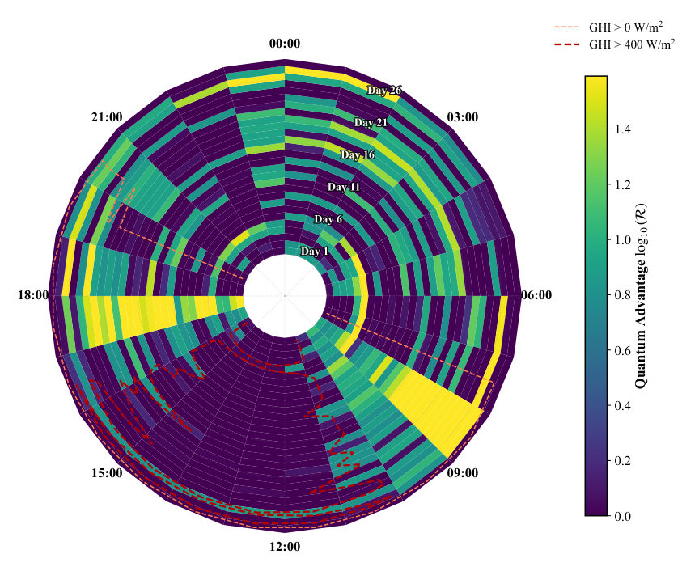
<figcaption class="paper-figure-caption"><b>Fig 1.</b> FIG. 1: Diurnal phase evolution of QI advantage under meteorological forcing. The polar clock maps</figcaption>
</figure>
<figure class="paper-figure-card">
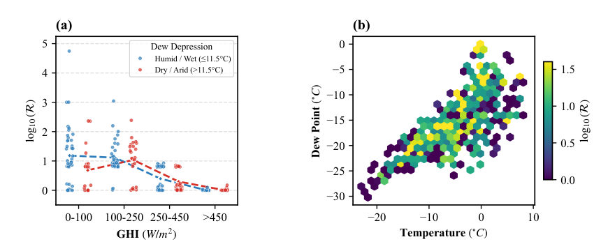
<figcaption class="paper-figure-caption"><b>Fig 2.</b> FIG. 2: Scatter and density distributions of QI advantage under varying meteorological parameters.</figcaption>
</figure>
<figure class="paper-figure-card">

<figcaption class="paper-figure-caption"><b>Fig 3.</b> FIG. 3: Probability density distributions of log10 R in the nocturnal boundary layer (GHI = 0 W/m2).</figcaption>
</figure>
<figure class="paper-figure-card">

<figcaption class="paper-figure-caption"><b>Fig 4.</b> FIG. 4: Multidimensional phase space representation of the QI advantage. The magnitude of log10 R</figcaption>
</figure>
<figure class="paper-figure-card">

<figcaption class="paper-figure-caption"><b>Fig 5.</b> FIG. 5: Architecture of the KAN.</figcaption>
</figure>
</div>

<p><strong>Summary.</strong> This paper addresses the critical issue of atmospheric turbulence degrading Quantum Illumination's advantage in free-space links. The authors introduce a novel physics-driven framework that uses Kolmogorov-Arnold Networks to predict turbulence strength directly from routine meteorological observations. This allows for the dynamic, all-weather quantification of quantum performance, moving QI systems closer to operational reality.</p>
<p><strong>Why it may be interesting.</strong> This work is highly relevant as it tackles the practical deployment challenge of quantum optics by providing a robust, predictive model for environmental noise sources (turbulence), which is crucial for developing real-world quantum sensing networks.</p>
<details>
<summary>Detailed structure</summary>
<p><strong>Main problem.</strong> The primary challenge is quantifying the degradation of quantum advantage provided by Quantum Illumination (QI) when operating through atmospheric turbulence.</p>
<p><strong>Main result.</strong> The authors propose an end-to-end framework that uses deep learning to map macroscopic weather data directly to the temporal evolution of quantum advantage, enabling all-weather operation for quantum radar.</p>
<p><strong>Method.</strong> They integrate a physics-driven approach using Kolmogorov-Arnold Networks (KAN) trained on meteorological data to predict turbulence parameters ($C_n^2$), which are then fed into the QI channel model.</p>
<p><strong>Model / system.</strong> The system models Quantum Illumination using a two-mode squeezed vacuum state in free-space channels affected by atmospheric turbulence. The framework bridges macroscopic meteorology (T, P, GHI, etc.) to microscopic quantum channel dynamics via KANs.</p>
<p><strong>Key observables.</strong> Quantum advantage ($\log_{10} R$), average error probability ($ar{P}_{	ext{err}}$), and the ratio $R$ comparing classical vs. quantum error probabilities.</p>
<p><strong>Important parameters / regimes.</strong> Meteorological variables (GHI, $L_\downarrow$, Dew Depression), turbulence structure constant ($C_n^2$), and specific thermodynamic regimes (e.g., twilight, nocturnal boundary layer).</p>
<p><strong>Assumptions / limitations.</strong> The framework assumes a physically consistent mapping from standard meteorological variables to quantum channel dynamics, bypassing the need for direct, costly measurements of $C_n^2$.</p>
<p><strong>Figures summary.</strong> Figures illustrate how QI advantage is modulated by GHI (peaking at twilight), collapses under extreme solar forcing or strong mechanical shear in nocturnal conditions, and show the dependence on specific thermodynamic states.</p>
<p><strong>Paper structure.</strong> The paper first establishes the physical problem of turbulence degradation for QI. It then details a multi-step methodology: 1) Using MOST/thermodynamics to derive atmospheric parameters; 2) Employing KANs to map macro-weather data to $C_n^2$; and 3) Integrating this prediction into the quantum error probability calculation to quantify advantage.</p>
</details>
<details>
<summary>Abstract</summary>
<p>Quantum illumination offers a significant theoretical advantage for target detection in high background noise environments. However, its practical deployment in free-space channels is hindered by atmospheric turbulence. Stochastic fluctuations in atmospheric turbulence inevitably degrade the quantum signature, rendering the real-time evaluation of quantum advantage under such dynamic conditions a critical yet unresolved challenge. To circumvent the reliance on costly direct turbulence measurements, we propose a physics-driven framework that integrates Kolmogorov-Arnold networks directly bridge macroscopic meteorological observations with microscopic quantum channel dynamics. Trained on 105,120 samples from 12 climatically diverse sites and validated on 26,280 unseen samples from three extreme boundary conditions (arid continental, tropical maritime, high-altitude plateau), our approach establishes a physically consistent mapping from standard meteorological variables to the temporal evolution of the quantum advantage. This end-to-end system dynamically quantifies the degradation of quantum advantage across diverse turbulence conditions. Our results provide a rigorous theoretical and data-driven pathway for environmental adaptation, facilitating the transition of quantum radar networks from proof-of-principle demonstrations to all-weather operational systems.</p>
</details>
<p><sub><a href="#top">↑ back to top</a></sub></p>

<p><a id="paper-2607.00698"></a></p>
<h3 id="quantum-machine-learning-models-for-graphs"><a href="http://arxiv.org/abs/2607.00698v1">Quantum machine learning models for graphs</a></h3>
<p><strong>Authors:</strong> Frédéric Sauvage, Pranav Kalidindi, Frederic Rapp, Martın Larocca<br>
<strong>Type:</strong> theory · <strong>Category:</strong> quantum information and computing · <strong>PDF:</strong> <a href="https://arxiv.org/pdf/2607.00698v1">https://arxiv.org/pdf/2607.00698v1</a><br>
<strong>Analysis basis:</strong> full PDF text, analyzed in chunks
<strong>Topic relevance:</strong> <code>analog quantum simulation</code> <strong>1/5</strong></p>
<div class="figure-strip-hint">↔ Scroll figures horizontally</div>
<div class="paper-figures-scroll">
<figure class="paper-figure-card">

<figcaption class="paper-figure-caption"><b>Fig 1.</b> FIG. 1. (a) Toolbox for the construction of GQML models on graphs including the characterization of the relevant equivariant linear and non-linear maps. These are used for the encoding of n-node graphs into n-qubit quantum states and to identify measurements leading to invariant or equivariant models. This toolbox allows us to recover known models, identify new ones (b), and even render existing models more expressive at no cost (c). It also ensures integration with classical models through feature augmentation (d). The models obtained lend themselves to classical pre-training strategies that can reduce the training effort that needs to be performed on a quantum device and mitigate issues...</figcaption>
</figure>
<figure class="paper-figure-card">

<figcaption class="paper-figure-caption"><b>Fig 2.</b> FIG. 2. Summary of the actions of Sn on the spaces of inter- ests both classical (order-k tensors) and quantum (operators) spaces. For each we provide the basis and action of a permu- tation, both formally and through visual examples.</figcaption>
</figure>
<figure class="paper-figure-card">

<figcaption class="paper-figure-caption"><b>Fig 3.</b> FIG. 3. (a) Symmetrizing (16) all elements of a basis of lin- ear maps Hom(V, W), one obtain a set of maps spanning the space of all equivariant maps HomG(V, W). (b) While in general this procedure is not scalable, this becomes tractable whenever the basis is closed under the action of the group symmetry (ie any element of the basis is mapped to another one under group action). This is the case for our choice of bases for Sn, and we use this strategy to identify all the equiv- ariant linear maps necessary to our models.</figcaption>
</figure>
<figure class="paper-figure-card">

<figcaption class="paper-figure-caption"><b>Fig 4.</b> FIG. 4. Classical pre-training. The invariant QML model considered has encoding circuit defined through Eq. (45) and a 2-dimensional output given by the expectation values of 2 observables O1 and O2 (46). (a) For larger graphs (n = 14 to 20 nodes) than used for training (n = 8 to 12 nodes), outputs of the classically pre-trained model (right panel) are compared to output of the model initialized with random parameters (left panel). Each point correspond to one graph and has coordinates (x, y) being the observables expectation values. (b) For a more detailed comparison, the dispersion (quantified by the variance) of the output of the models are reported at varied system size and for the two...</figcaption>
</figure>
</div>

<p><strong>Summary.</strong> This paper develops a rigorous mathematical framework for Geometric Quantum Machine Learning (GQML) applied to graph data encoded in qubits. It characterizes the necessary equivariant quantum circuits by leveraging group theory symmetries ($S_n$) to build a 'toolbox' of model components. The resulting models are shown to naturally integrate with classical ML and benefit from pre-training strategies, advancing the field toward practical quantum computation for structured data.</p>
<p><strong>Why it may be interesting.</strong> This work provides a deep theoretical grounding for designing physically realizable quantum circuits for graph data. For AMO physicists, the focus on symmetries ($S_n$) suggests potential connections to physical Hamiltonians or measurement bases that naturally respect permutation symmetry, which is crucial when modeling interacting many-body systems.</p>
<details>
<summary>Detailed structure</summary>
<p><strong>Main problem.</strong> The primary goal is to develop a rigorous framework for Geometric Quantum Machine Learning (GQML) models applied to graph problems, addressing the lack of a unifying design perspective compared to classical GML.</p>
<p><strong>Main result.</strong> The authors provide a comprehensive 'toolbox' based on characterizing equivariant maps under the permutation group $S_n$, enabling the construction and analysis of quantum graph models with proven benefits like classical pre-training compatibility.</p>
<p><strong>Method.</strong> The work relies heavily on abstract algebraic techniques to characterize symmetry constraints (equivariance/invariance) for linear and observable maps acting on quantum state spaces defined by $n$-qubit systems, utilizing symmetrization procedures.</p>
<p><strong>Model / system.</strong> The system involves encoding $n$-node graphs into $n$-qubit states. The models are parameterized quantum circuits whose structure must respect the symmetries of the graph (i.e., be equivariant with respect to permutations $\sigma \in S_n$).</p>
<p><strong>Key observables.</strong> Symmetric and equivariant observables, expectation values derived from specific Pauli string combinations ($\vec{k}$), and classification metrics like Bell numbers or tetrahedral numbers.</p>
<p><strong>Important parameters / regimes.</strong> The number of nodes ($n$), the depth of the quantum circuit ($L$), and the parameters $ heta$ governing the unitary evolution $U_	heta$.</p>
<p><strong>Assumptions / limitations.</strong> The analysis often assumes that restricting to specific subspaces (like those spanned by Pauli strings involving only I and Z) is sufficient for practical implementation, and it treats expectation values as exact rather than accounting for shot noise.</p>
<p><strong>Figures summary.</strong> Figure 1 illustrates the overall toolbox integrating classical pre-training and feature augmentation. Figure 4 compares the performance variance of pre-trained vs. randomly initialized models on graph classification tasks across varying system sizes $n$.</p>
<p><strong>Paper structure.</strong> The paper builds logically: first, establishing the need for GQML by comparing it to GML; second, developing the mathematical machinery (symmetrization) to characterize equivariant maps in quantum operator spaces ($    ext{Hom}_{S_n}(V, W)$); third, applying this framework to define concrete model architectures (invariant/equivariant expectation values); and finally, demonstrating practical benefits through pre-training studies.</p>
</details>
<details>
<summary>Abstract</summary>
<p>Geometric Machine Learning (GML) successes have been achieved through the thorough study and design of new equivariant neural networks. In comparison, geometric quantum machine learning (GQML) models lack such a detailed understanding and, despite already several proposals, a unifying perspective on their design remains elusive. In this work, we focus on GQML models for graph problems that showcase a lot of structure and still remain frontier in machine learning. For the case when n-node graphs are encoded in n-qubit states, we provide a comprehensive characterization of their constituents. Taken together, these furnish us with a toolbox for the design of quantum graph models, and we further probe its benefits including the natural integration with classical models, generalization of known GQML models (sometimes extending their expressivity at virtually no cost), and straightforward classical pre-training strategies. The latter two features are demonstrated in dedicated numerical experiments.</p>
</details>
<p><sub><a href="#top">↑ back to top</a></sub></p>

<p><a id="paper-2607.00507"></a></p>
<h3 id="robust-quantum-memory-advantage-from-contextuality"><a href="http://arxiv.org/abs/2607.00507v1">Robust Quantum Memory Advantage from Contextuality</a></h3>
<p><strong>Authors:</strong> Shiroman Prakash<br>
<strong>Type:</strong> theory · <strong>Category:</strong> quantum information and computing · <strong>PDF:</strong> <a href="https://arxiv.org/pdf/2607.00507v1">https://arxiv.org/pdf/2607.00507v1</a><br>
<strong>Analysis basis:</strong> full PDF text, analyzed in chunks
<strong>Topic relevance:</strong> <code>entanglement &amp; information structure</code> <strong>1/5</strong></p>
<div class="figure-strip-hint">↔ Scroll figures horizontally</div>
<div class="paper-figures-scroll">
<figure class="paper-figure-card">

<figcaption class="paper-figure-caption"><b>Fig 1.</b> Figure 1: The complete Boolean-orthogonality graph Ω4. Vertices are colored such that no two connected vertices share a color, illustrating that χ(Ω4) = 4.</figcaption>
</figure>
<figure class="paper-figure-card">
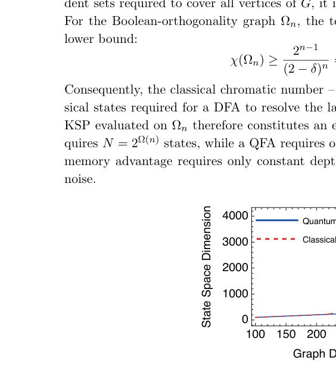
<figcaption class="paper-figure-caption"><b>Fig 2.</b> Figure 2: Scaling of the state space dimension as a function of the graph dimension n. While the quantum memory cost ξ(Ωn) (blue) grows linearly, the lower bound on the classical memory cost χ(Ωn) (red dashed), derived from the Frankl-Rodl (FR) theorem [35], grows exponentially.</figcaption>
</figure>
<figure class="paper-figure-card">

<figcaption class="paper-figure-caption"><b>Fig 3.</b> Figure 3: This 18-vertex graph has χ = 7, ξ = 6 and χf = 5.68. It cannot exhibit state- independent contextuality because χf &lt; ξ [18]. However, it does exhibit representational contextuality, as χ &gt; ξ.</figcaption>
</figure>
<figure class="paper-figure-card">

<figcaption class="paper-figure-caption"><b>Fig 4.</b> Figure 4: A valid 6-coloring of the 60-ray orthogonality graph of [42] derived from vertices of the 4D 600-cell. The graph is partitioned into 15 disjoint 4-element orthogonal bases (indicated by the shaded regions). Because each basis forms a clique, every region contains four distinct vertex colors.</figcaption>
</figure>
</div>

<p><strong>Summary.</strong> The paper establishes an exponential advantage for Quantum Finite Automata over classical automata by solving a problem rooted in contextuality. This advantage is quantified by the gap between the graph's chromatic number ($\chi$) and its orthogonal rank ($\xi$). Crucially, this resource separation remains robust even when subjected to realistic operational noise.</p>
<p><strong>Why it may be interesting.</strong> This work provides a concrete computational realization of quantum resource theory, showing that structural incompatibilities between classical deterministic models (NCHVMs) and quantum mechanics can lead to provable, noise-resilient advantages in memory complexity for computation.</p>
<details>
<summary>Detailed structure</summary>
<p><strong>Main problem.</strong> The paper aims to demonstrate an exponential, noise-resilient memory advantage for quantum finite automata (QFAs) over classical deterministic finite automata (DFAs) by exploiting graph-theoretic properties of contextuality.</p>
<p><strong>Main result.</strong> An exponential separation is achieved in memory cost ($d=O(n)$ vs. $N=2^{\Omega(n)}$) when solving a promise problem derived from the Kochen-Specker Problem on Boolean-orthogonality graphs, and this advantage is robust to operational noise.</p>
<p><strong>Method.</strong> The analysis uses graph theory invariants ($\chi(G)$, $\xi(G)$) applied to an exclusivity graph $G$ to define a computational task. The quantum solution utilizes QFAs operating via Householder reflections, while the classical lower bound relies on the chromatic number.</p>
<p><strong>Model / system.</strong> The core model is the Quantum Finite Automaton (QFA) solving a promise problem defined by an exclusivity graph $G$. The underlying structure relates to the Kochen-Specker Problem and involves comparing the quantum memory dimension ($\xi(G)+1$) against the classical state requirement ($\chi(G)$).</p>
<p><strong>Key observables.</strong> Chromatic number $\chi(G)$, orthogonal rank $\xi(G)$, Quantum Memory Dimension $d$, Classical State Requirement $N$.</p>
<p><strong>Important parameters / regimes.</strong> The exponential separation scaling ($d=O(n)$ vs. $N=2^{\Omega(n)}$) for Boolean-orthogonality graphs, and the noise resilience threshold ($\mathcal{O}(1)$).</p>
<p><strong>Assumptions / limitations.</strong> The advantage relies on 'representational contextuality,' defined by the structural gap $\chi(G) > \xi(G)$, which is distinguished from statistical contextuality (SIC).</p>
<p><strong>Figures summary.</strong> Figures illustrate graph structures like $\Omega_4$ and general graphs showing the relationship between $\chi$, $\xi$, and $\chi_f$. One figure compares linear quantum scaling to exponential classical lower bounds.</p>
<p><strong>Paper structure.</strong> The paper establishes the computational problem (KSP on $G$), derives the classical lower bound using $\chi(G)$, proposes the QFA solution bounded by $\xi(G)+1$, proves the exponential separation, and finally distinguishes this 'representational' advantage from other forms of contextuality.</p>
</details>
<details>
<summary>Abstract</summary>
<p>Quantum contextuality is widely recognized as an essential non-classical resource underlying quantum technology, yet illuminating the precise mechanisms through which it translates into unconditional computational advantages remains an ongoing challenge. We demonstrate an exponential, noise-resilient memory advantage for quantum finite automata arising from graph-theoretic approaches to contextuality. We define a promise problem on an exclusivity graph $G$ for which any classical deterministic automaton acts as a non-contextual hidden variable model requiring at least $N=χ(G)$ states, where $χ(G)$ is the graph's chromatic number. In contrast, by exploiting a structural phenomenon we term \textit{representational contextuality}, a QFA solves this task using a memory of dimension at most $d=ξ(G)+1$, where $ξ(G)$ is the graph's orthogonal rank. This separation scales exponentially ($d=\mathcal O(n)$ versus $N=2^{Ω(n)}$) for Boolean-orthogonality graphs. Crucially, this memory advantage maintains an $\mathcal{O}(1)$ threshold against both depolarizing and coherent noise.</p>
</details>
<p><sub><a href="#top">↑ back to top</a></sub></p>

<p><a id="paper-2607.00306"></a></p>
<h3 id="scattering-bound-states-and-resonances-in-the-one-dimensional-dirac-equation-via-supersymmetric-quantum-mechanics"><a href="http://arxiv.org/abs/2607.00306v1">Scattering, bound states, and resonances in the one-dimensional Dirac equation via supersymmetric quantum mechanics</a></h3>
<p><strong>Authors:</strong> Camila C. Soares, Luis B. Castro, Antonio S. de Castro<br>
<strong>Type:</strong> theory · <strong>Category:</strong> other · <strong>PDF:</strong> <a href="https://arxiv.org/pdf/2607.00306v1">https://arxiv.org/pdf/2607.00306v1</a><br>
<strong>Analysis basis:</strong> full PDF text, analyzed in chunks
<strong>Topic relevance:</strong> <code>Kondo &amp; dissipative impurity</code> <strong>1/5</strong></p>
<div class="figure-strip-hint">↔ Scroll figures horizontally</div>
<div class="paper-figures-scroll">
<figure class="paper-figure-card">

<figcaption class="paper-figure-caption"><b>Fig 1.</b> Fig. 1: Transmission probability T for the Dirac- matched P¨oschl–Teller effective well with ω = 2 and V0 = 0.9 (black), V0 = 1.9 (red), and V0 = 2.9 (blue) (in units where ℏ= c = m = 1). (a) Full energy range. (b) Magnified view of the high-transmission re- gion T ∈[0.983, 1.0].</figcaption>
</figure>
<figure class="paper-figure-card">
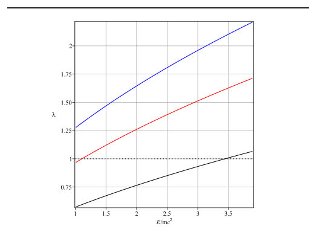
<figcaption class="paper-figure-caption"><b>Fig 2.</b> Fig. 2: Energy dependence of the P¨oschl–Teller param- eter λ(E) from the Dirac matching condition for ω = 2 and V0 = 0.9 (black), V0 = 1.9 (red), and V0 = 2.9 (blue) (in units where ℏ= c = m = 1).</figcaption>
</figure>
<figure class="paper-figure-card">

<figcaption class="paper-figure-caption"><b>Fig 3.</b> Fig. 3: Pole pattern in the complex k-plane for the Dirac-matched P¨oschl–Teller barrier with ω = 2, V0 = −2.5, and E0 = 1.2 (in units where ℏ= c = m = 1), yielding η(E0) ≃1.58 and k(±) n = ±ωη(E0) −iω(n + 1</figcaption>
</figure>
</div>

<p><strong>Summary.</strong> This paper unifies the study of scattering and bound states for the 1D Dirac equation by mapping it onto an effective Schrödinger-like problem. Using Supersymmetric Quantum Mechanics and shape invariance, the authors derive closed-form solutions for transmission probabilities. The analysis reveals that resonances manifest as predictable pole structures in the complex momentum plane.</p>
<p><strong>Why it may be interesting.</strong> This work provides powerful analytical tools (SUSYQM) to analyze relativistic quantum systems, connecting continuum physics (scattering) directly to discrete spectra (bound states/resonances) within a single framework, which is valuable for modeling particle interactions in condensed matter or high-energy contexts.</p>
<details>
<summary>Detailed structure</summary>
<p><strong>Main problem.</strong> The paper develops a unified theoretical framework to analyze both scattering phenomena (transmission/reflection) and discrete bound states for the one-dimensional Dirac equation.</p>
<p><strong>Main result.</strong> It successfully maps the relativistic problem onto an effective Schrödinger-like equation, allowing the use of SUSYQM techniques to derive closed-form expressions for transmission probabilities and characterize resonance poles in the complex momentum plane.</p>
<p><strong>Method.</strong> The core methods involve exploiting spin/pseudospin symmetries to reduce the Dirac system, applying Supersymmetric Quantum Mechanics (SUSYQM) with shape invariance, and analyzing pole structures via analytic continuation of scattering amplitudes.</p>
<p><strong>Model / system.</strong> The model is a 1D relativistic fermion governed by the Dirac equation subjected to combined scalar and vector potentials. The analysis focuses on specific solvable forms, notably the hyperbolic Pöschl-Teller potential.</p>
<p><strong>Key observables.</strong> Transmission probability $T(E)$, reflection amplitude $R(E)$, bound-state energies (poles of $T(k)$), and resonance/quasi-normal mode frequencies (poles in the complex momentum plane).</p>
<p><strong>Important parameters / regimes.</strong> The energy $E$, coupling constants defining the potentials ($V_0$), and parameters related to symmetry breaking ($\Delta, \Sigma$). The regime is controlled by a discriminant $D(E)$.</p>
<p><strong>Assumptions / limitations.</strong> The analysis relies on assuming spin-symmetry or pseudospin-symmetry to reduce the coupled system to a single second-order equation. For scattering, short-range interactions are assumed.</p>
<p><strong>Figures summary.</strong> Figures illustrate the energy dependence of transmission coefficients for attractive potentials (bound states) and map out the pole structure in the complex momentum plane, distinguishing between high-barrier resonance regimes and low-barrier virtual state regimes.</p>
<p><strong>Paper structure.</strong> The paper proceeds by establishing the general Hamiltonian, exploiting symmetry to reduce it to a Sturm-Liouville form. It then applies SUSYQM/shape invariance to solve for scattering amplitudes, finally using pole analysis in the complex plane to characterize bound states and resonances.</p>
</details>
<details>
<summary>Abstract</summary>
<p>We develop a unified treatment of scattering and discrete spectra for the one-dimensional Dirac equation with scalar and vector interactions. Under the spin-symmetry condition, the coupled first-order Dirac system maps exactly onto an effective Sturm--Liouville (Schrö-din-ger-like) problem for a single spinor component. This mapping provides a convenient framework for analyzing transmission, reflection, and analytic continuation. As an explicit application, we consider effective interactions of hyperbolic Pöschl--Teller type and exploit supersymmetric quantum mechanics and shape invariance to obtain a closed-form expression for the transmission probability. The bound-state spectrum is then recovered from the poles of the analytically continued transmission amplitude, reproducing known results and offering a unified description of scattering and bound states. For the barrier configuration, we briefly comment on the resulting pole pattern in the complex momentum plane and its connection with resonance and quasi-normal-mode behavior. Moreover, we use the chiral transformation to relate the spin- and pseudospin-symmetry sectors and translate results between them without repeating the full derivation.</p>
</details>
<p><sub><a href="#top">↑ back to top</a></sub></p>
<h2 id="other-papers-5">Other papers (5)</h2>
<p><em>Papers from primary archives without highlighted authors or any topic match. Click to expand.</em></p>
<details>
<summary>Show other papers</summary>

<p><a id="paper-2607.00469"></a></p>
<h3 id="dependency-aware-circuit-scheduling-for-multi-core-quantum-systems-to-minimize-makespan"><a href="http://arxiv.org/abs/2607.00469v1">Dependency-Aware Circuit Scheduling for Multi-Core Quantum Systems to Minimize Makespan</a></h3>
<p><strong>Authors:</strong> Rajeswari Suance P S, Ruchika Gupta, Maurizio Palesi, John Jose<br>
<strong>Type:</strong> theory · <strong>Category:</strong> quantum information and computing · <strong>PDF:</strong> <a href="https://arxiv.org/pdf/2607.00469v1">https://arxiv.org/pdf/2607.00469v1</a><br>
<strong>Analysis basis:</strong> full PDF text, analyzed in chunks</p>
<div class="figure-strip-hint">↔ Scroll figures horizontally</div>
<div class="paper-figures-scroll">
<figure class="paper-figure-card">
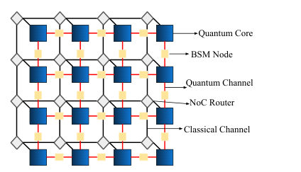
<figcaption class="paper-figure-caption"><b>Fig 1.</b> Fig. 1: Multi-Core Quantum Computing Architecture</figcaption>
</figure>
<figure class="paper-figure-card">

<figcaption class="paper-figure-caption"><b>Fig 2.</b> Fig. 2: Case study setup (a) 3 × 3 Mesh Topology. (b) Example quantum circuit with five two-qubit gates. (c) Table showing gate number, input qubits, their resident cores, and hop counts. (d) Dependency graph of the circuit gates.</figcaption>
</figure>
<figure class="paper-figure-card">

<figcaption class="paper-figure-caption"><b>Fig 3.</b> Fig. 3: Comparison of scheduling strategies: layered schedul- ing (makespan=12) versus greedy scheduling (makespan=9)</figcaption>
</figure>
<figure class="paper-figure-card">

<figcaption class="paper-figure-caption"><b>Fig 4.</b> Fig. 4: Comparison of various circuit scheduling with synthetic random circuits</figcaption>
</figure>
<figure class="paper-figure-card">
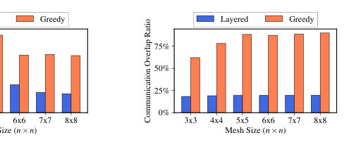
<figcaption class="paper-figure-caption"><b>Fig 5.</b> Fig. 4a shows the comparative study of makespan for syn- thetic random circuits across different hardware configurations. We can see that proposed greedy scheduling algorithm con- sistently achieves a lower makespan than layered scheduling. This improvement arises because the greedy approach exploits inter-layer parallelism, allowing gates to execute as soon as their dependencies and resources are available. In contrast, the layered scheduling ignores the fine-grained parallelism and fails to hide inter-core communication latency, which is particularly evident for the larger meshes. Fig. 4b shows the comparison of core utilization for the synthetic benchmarks. We can see that the greedy...</figcaption>
</figure>
</div>
<p><strong>Summary.</strong> This paper addresses the critical challenge of efficiently scheduling quantum circuits across multiple interconnected quantum cores. By proposing a dependency-aware greedy algorithm over a simple layer-by-layer approach, the authors demonstrate significant speedups by exploiting fine-grained parallelism and better managing communication latency. This work provides crucial insights for optimizing future multi-core quantum hardware implementations.</p>
<p><strong>Why it may be interesting.</strong> While focused on classical scheduling algorithms, the explicit modeling of resource constraints (qubit availability, entanglement links) and communication overhead is highly relevant for understanding practical limitations in building large-scale quantum simulators or hardware control stacks.</p>
<details>
<summary>Detailed structure</summary>
<p><strong>Main problem.</strong> The primary goal is to minimize the overall execution time (makespan) when running quantum circuits on multi-core quantum computing architectures.</p>
<p><strong>Main result.</strong> A dependency-aware greedy scheduling strategy was shown to achieve an average 40% reduction in makespan and improve core utilization compared to baseline layered scheduling on real benchmarks.</p>
<p><strong>Method.</strong> The authors compare a simple, sequential 'layered scheduling' approach against a proposed fine-grained, dependency-aware greedy heuristic that schedules gates as soon as all prerequisites and resources are available.</p>
<p><strong>Model / system.</strong> The model is a multi-core quantum system structured on an n x n 2D mesh topology. Inter-core operations require quantum teleportation due to the no-cloning theorem, introducing significant communication latency.</p>
<p><strong>Key observables.</strong> Makespan (T_total), Core Utilization, and Communication Overlap Ratio (R_comm).</p>
<p><strong>Important parameters / regimes.</strong> The system size is defined by the mesh topology ($n 	imes n$) and the number of qubits per core ($Q_i$). Inter-core communication delay ($    ext{com time}$) is a critical parameter.</p>
<p><strong>Assumptions / limitations.</strong> Assumes deterministic teleportation with successful entanglement generation, and that inter-core communication latency is orders of magnitude higher than local gate execution latency.</p>
<p><strong>Figures summary.</strong> Figures illustrate the multi-core architecture (NoC), compare makespans between layered vs. greedy scheduling on case studies, and show performance metrics across varying mesh sizes using synthetic and real benchmarks.</p>
<p><strong>Paper structure.</strong> The paper first establishes the physical model of a multi-core quantum processor. It then introduces two scheduling methods: baseline layered scheduling and the proposed dependency-aware greedy heuristic. The core of the work involves rigorous evaluation against various benchmarks to quantify performance gains.</p>
</details>
<details>
<summary>Abstract</summary>
<p>Multi-core quantum computing architectures have emerged as a promising solution to the qubit scalability limitations of monolithic NISQ devices. Quantum algorithms are expressed as quantum circuits composed of single- and two-qubit gates. However, circuit scheduling in multi-core quantum systems remains largely unexplored. Reducing overall execution time (makespan), increasing core utilization, and hiding communication latency behind computation depends on effective scheduling. In this paper, we first introduce a layered scheduling approach as a baseline where quantum gates within the same layer are executed in parallel, while layers themselves are executed sequentially. We then propose a greedy scheduling strategy which schedules each gate as soon as all its dependencies and required resources are available. This allows fine-grained parallelism across cores. Our evaluation shows that on real benchmarks, greedy scheduling achieves an average 40% reduction in makespan and improvement in core utilization. The results suggest that the use of intelligent circuit scheduling to exploit parallelism can greatly enhance the speed of circuit execution in multi-core quantum architectures.</p>
</details>
<p><sub><a href="#top">↑ back to top</a></sub></p>

<p><a id="paper-2607.00939"></a></p>
<h3 id="leveraging-llm-based-agentic-systems-to-generate-quantum-applications-for-test-optimization"><a href="http://arxiv.org/abs/2607.00939v1">Leveraging LLM-Based Agentic Systems to Generate Quantum Applications for Test Optimization</a></h3>
<p><strong>Authors:</strong> Ming Tao, Yuechen Li, Tao Yue, Man Zhang, Aitor Arrieta Marcos<br>
<strong>Type:</strong> experiment · <strong>Category:</strong> quantum information and computing · <strong>PDF:</strong> <a href="https://arxiv.org/pdf/2607.00939v1">https://arxiv.org/pdf/2607.00939v1</a><br>
<strong>Analysis basis:</strong> full PDF text, analyzed in chunks</p>
<div class="figure-strip-hint">↔ Scroll figures horizontally</div>
<div class="paper-figures-scroll">
<figure class="paper-figure-card">

<figcaption class="paper-figure-caption"><b>Fig 1.</b> Figure 1: Overview of QPipe.</figcaption>
</figure>
<figure class="paper-figure-card">

<figcaption class="paper-figure-caption"><b>Fig 2.</b> Figure 2: Relation between lengths of 20 requirements and RQ1 metrics.</figcaption>
</figure>
<figure class="paper-figure-card">

<figcaption class="paper-figure-caption"><b>Fig 3.</b> Figure 3: Distribution of QRR across successful generations of 10 TCS and 10 TCM requirements</figcaption>
</figure>
<figure class="paper-figure-card">
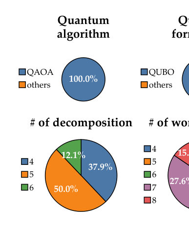
<figcaption class="paper-figure-caption"><b>Fig 4.</b> Figure 4: Pie charts for six patterns observed in 58 successful runs of QPipe</figcaption>
</figure>
<figure class="paper-figure-card">

<figcaption class="paper-figure-caption"><b>Fig 5.</b> Figure 4 shows that the successful runs share a stable prompt-conditioned quantum core: all 58 use a QUBO formulation and QAOA. This pattern is not from predefined workflow settings or fixed model configurations. Rather, in each run, agents autonomously choose the formulation and algorithm, and all 58 successful runs hap- pen to converge on QUBO and QAOA for our target problems, even though we prompt Analysis Agent with exemplary algorithms previously used as solutions to SE optimization problems [40], like variational quantum eigensolver and Grover search, while no specified encoding candidates are offered for Encoding Agent. The fact that all successful runs use QUBO also does not mean...</figcaption>
</figure>
</div>
<p><strong>Summary.</strong> This paper introduces QPipe, an LLM-based multi-agent system designed to automatically generate executable quantum applications from natural language requirements for test optimization. By coordinating specialized agents through a structured workflow, it successfully translates abstract goals into concrete quantum circuits that solve real-world benchmarks. This demonstrates the potential of agentic AI to bridge the significant expertise gap in applying quantum computing to practical software engineering problems.</p>
<p><strong>Why it may be interesting.</strong> While focused on SE tooling, the underlying challenge of translating high-level physical or computational goals into precise quantum circuit implementations is relevant to designing control protocols for complex quantum simulations or hybrid quantum-classical algorithms.</p>
<details>
<summary>Detailed structure</summary>
<p><strong>Main problem.</strong> The core problem is autonomously translating high-level, natural-language (NL) requirements for Software Engineering (SE) optimization into executable quantum applications.</p>
<p><strong>Main result.</strong> The proposed agentic system, QPipe, successfully generates these complex quantum applications with high success rates and generated solutions that often outperform classical baselines on test optimization benchmarks.</p>
<p><strong>Method.</strong> It employs a multi-agent LLM architecture (QPipe) that decomposes the task into specialized stages: parsing, encoding (mapping to QUBO/Ising), code generation, review, and verification.</p>
<p><strong>Model / system.</strong> The system operates on quantum computing principles, formulating optimization problems as QUBO or Ising models ($\min x^	op Qx$) suitable for execution via algorithms like QAOA on simulated quantum hardware.</p>
<p><strong>Key observables.</strong> Success rates (e.g., 100% compilation pass rate), solution quality measured by the Quantum Resource Ratio (QRR) compared to classical solvers, and generation costs (time/tokens).</p>
<p><strong>Important parameters / regimes.</strong> Qubit budget constraints are critical, forcing the Encoding Agent to decompose large problems into smaller, manageable subproblems.</p>
<p><strong>Assumptions / limitations.</strong> The system assumes that stable formulation patterns (QUBO/QAOA) exist for TCO tasks and that agentic coordination can reliably bridge the gap between abstract language and executable quantum code.</p>
<p><strong>Figures summary.</strong> Figures illustrate the overall QPipe workflow, show ablation results proving the necessity of specific agents (like review), and compare solution quality metrics (QRR) against baselines.</p>
<p><strong>Paper structure.</strong> The paper introduces the problem, details the multi-agent architecture (QPipe), describes the structured workflow involving specialized agents for each step (Parse $
ightarrow$ Encode $
ightarrow$ CodeGen $\leftrightarrow$ Review $
ightarrow$ Verify), and concludes with empirical evaluations across multiple benchmarks.</p>
</details>
<details>
<summary>Abstract</summary>
<p>Quantum computing is increasingly explored for software engineering (SE) optimization, but translating natural-language (NL) task-level requirements into executable quantum applications still demands substantial quantum and programming expertise. We present QPipe, a large language model (LLM)-based multi-agent architecture that autonomously turns NL requirements into traceable quantum-application workflows through specialized agents for requirement parsing, formulation, code generation, review, execution, and verification. We evaluate QPipe on 20 NL requirements, each associated with a real-world benchmark and a test-optimization problem. QPipe successfully completes the key stages of quantum-application generation across requirements, achieving average rates of 100% for code compilation and 96.7% for application execution and final-result combination, with average generation costs of 260.1 seconds and 1.89M tokens per requirement. Among the generated quantum applications that execute successfully, the returned solutions outperform the offline genetic algorithm baseline in most cases. Ablation results further show that QPipe's advantage depends on retaining code-generation skills, task knowledge, review feedback, and multi-agent decomposition. These results indicate that agentic coordination can support generation of executable quantum applications for tackling test optimization problems from real-world benchmarks.</p>
</details>
<p><sub><a href="#top">↑ back to top</a></sub></p>

<p><a id="paper-2607.00679"></a></p>
<h3 id="quantum-oscillations-of-math964math-under-c-axis-uniaxial-stress"><a href="http://arxiv.org/abs/2607.00679v1">Quantum Oscillations of $\mathrm{Sr}_2\mathrm{RuO}_4$ under c-Axis Uniaxial Stress</a></h3>
<p><strong>Authors:</strong> Fabian Jerzembeck, Maximilian T. Pelly, Helge Rosner, Edgar Abarca Morales, Naoki Kikugawa, Dmitry A. Sokolov, Andrew P. Mackenzie, Andreas W. Rost, Elena Hassinger, Javier F. Landaeta<br>
<strong>Type:</strong> both · <strong>Category:</strong> strongly correlated electrons · <strong>PDF:</strong> <a href="https://arxiv.org/pdf/2607.00679v1">https://arxiv.org/pdf/2607.00679v1</a><br>
<strong>Analysis basis:</strong> full PDF text, analyzed in chunks</p>
<div class="figure-strip-hint">↔ Scroll figures horizontally</div>
<div class="paper-figures-scroll">
<figure class="paper-figure-card">

<figcaption class="paper-figure-caption"><b>Fig 1.</b> Figure 1. Schematic 2D Fermi surface of Sr2RuO4 under uniaxial stress. (a) Zero stress. (b) In-plane uniaxial stress |σxx| &gt; |σcrit,xx|. (c) Out-of-plane uniaxial stress |σzz| &gt; |σcrit,zz|.</figcaption>
</figure>
<figure class="paper-figure-card">

<figcaption class="paper-figure-caption"><b>Fig 2.</b> Figure 2. (a) Raw dHvA oscillations as a function of magnetic field at 90 mK (stress cell temperature) for a series of compressive stresses. (b) Same data as in (a) plotted versus inverse field; curves are vertically shifted for clarity. (c–e) Fourier spectra highlighting the α, β, γ, and 2α +β peaks under different stresses. FFTs were taken over the field range 3–15 T for α and 8–15 T for the other Fermi surface sheets.</figcaption>
</figure>
<figure class="paper-figure-card">
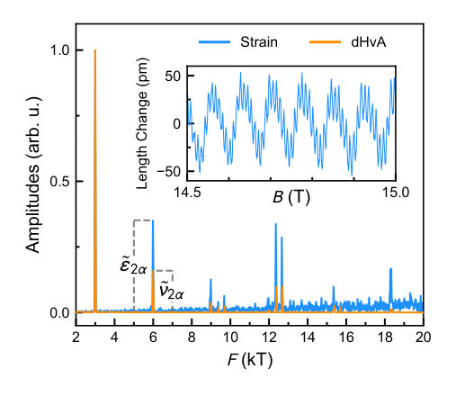
<figcaption class="paper-figure-caption"><b>Fig 3.</b> Figure 4. Comparison of the FFTs (8–15 T range) of quantum oscil- lations from magnetostriction (85 mK) and dHvA (125 mK) on the same sample. Before comparison, the strain FFT was multiplied by F2 (details are in the main text). Both spectra are then normalized to the α peak height. The inset shows the raw dilatometer signal (strain oscillations) as a function of field.</figcaption>
</figure>
<figure class="paper-figure-card">
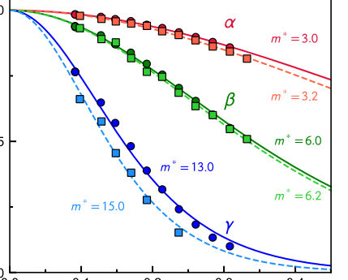
<figcaption class="paper-figure-caption"><b>Fig 4.</b> Figure 3. Lifshitz-Kosevich effective mass analysis at 0 GPa (circles, solid lines) and −1 GPa (squares, dashed lines). Uncertainties on the effective masses from the fits are estimated to be about 2% for the α and β sheets, and about 5% for the γ sheet.</figcaption>
</figure>
<figure class="paper-figure-card">

<figcaption class="paper-figure-caption"><b>Fig 5.</b> Figure 6. (a) Photo of a two-part carrier: the sample is mounted across a gap (red rectangle) with an excitation coil around its neck. (b) c-axis sample with a 48 turns pick-up coil. The sample was necked down in the center to reach larger stresses. (c) Mutual in- ductance against temperature in a series of compressive stresses. We show both the stress and, in brackets, the displacement, applied to the sample. (d) Comparison of Tc(σ) −Tc(σ = 0) against stress. Tc of the QO sample was determined by a threshold criterion, as indicated in panel (c), and compared to results from Ref. [16].</figcaption>
</figure>
</div>
<p><strong>Summary.</strong> This work uses dHvA measurements on $\mathrm{Sr}_2\mathrm{RuO}_4$ to map how uniaxial strain modifies its electronic structure. By observing changes in Fermi surface areas and effective masses, the authors demonstrate that stress induces charge transfer between orbital sheets, driving the system toward a Lifshitz transition. This establishes quantum oscillation measurements under mechanical stress as a powerful new experimental route for probing correlated electron physics.</p>
<p><strong>Why it may be interesting.</strong> The methodology—using quantum oscillations under controlled strain combined with first-principles theory—is highly valuable for understanding emergent phenomena in strongly correlated systems where external tuning parameters (like stress) can drive topological phase transitions or alter superconducting pairing mechanisms.</p>
<details>
<summary>Detailed structure</summary>
<p><strong>Main problem.</strong> The study investigates how uniaxial stress affects the electronic structure and Fermi surface of the unconventional superconductor $\mathrm{Sr}_2\mathrm{RuO}_4$, specifically addressing discrepancies between predicted density of states enhancement and observed $T_c$ suppression.</p>
<p><strong>Main result.</strong> Under c-axis compression, charge transfer occurs from hole-like to electron-like sheets ($\alpha 	o \gamma$), driving the system toward a Lifshitz transition. The measurements confirm that quantum oscillation data, combined with band structure calculations, provide a powerful new tool for studying quantum materials.</p>
<p><strong>Method.</strong> The research combines De Haas-van Alphen (dHvA) quantum oscillation measurements under uniaxial stress ($\sigma_{zz}$) with theoretical predictions from Density Functional Theory (DFT) and magnetostriction analysis.</p>
<p><strong>Model / system.</strong> The system is the correlated electron material $\mathrm{Sr}_2\mathrm{RuO}_4$, an unconventional superconductor. The study probes its electronic structure evolution by applying controlled uniaxial strain/stress along the c-axis, which modifies the Fermi surface topology and carrier distribution among different orbital sheets ($\alpha, eta, \gamma$).</p>
<p><strong>Key observables.</strong> dHvA frequencies (cross-sectional areas of $\alpha, eta, \gamma$ sheets), effective masses ($m^*$), critical stress for Lifshitz transition ($\sigma_{	ext{crit},c}$), and the superconducting critical temperature $T_c$.</p>
<p><strong>Important parameters / regimes.</strong> Uniaxial stress up to $-1.8$ GPa (or higher in some analyses); Fermi surface sheets $\alpha, eta, \gamma$; Temperature dependence of quantum oscillation amplitudes.</p>
<p><strong>Assumptions / limitations.</strong> The analysis assumes that the observed changes are due to intrinsic electronic structure evolution rather than experimental artifacts like strain inhomogeneity or temperature gradients; DFT calculations provide a reliable baseline for band structure predictions.</p>
<p><strong>Figures summary.</strong> Figures show raw dHvA oscillations and Fourier spectra demonstrating frequency shifts under stress. Comparisons are made between these experimental results, magnetostriction measurements, and DFT-calculated frequency shifts to validate the physical mechanism of charge transfer and topology change.</p>
<p><strong>Paper structure.</strong> The paper establishes the need for studying electronic structure evolution under strain in correlated materials. It presents dHvA measurements showing clear quantum oscillations up to high stresses. The core analysis details how Fermi surface areas change (charge transfer) and how effective masses are modified, comparing these findings rigorously against DFT calculations to pinpoint the approach toward a Lifshitz transition.</p>
</details>
<details>
<summary>Abstract</summary>
<p>Uniaxial stress has now been widely used to study correlated electron materials. However, Fermi surface-resolved experimental data on the evolution of the electronic structure under piezoelectrically applied stress are sparse, with no reports of de Haas-van Alphen (dHvA) effects under uniaxial stress. Here we present dHvA measurements under $c$-axis uniaxial stress on the unconventional superconductor $\mathrm{Sr}_2\mathrm{RuO}_4$. This allows us to study the evolution of the electronic structure directly and to gain insight into the contradicting behavior of the predicted enhancement of the electronic density of states and the observed suppression of $T_\text{c}$. We are able to follow all Fermi surfaces for stress up to $-1.8$~GPa and find that the cross-sectional areas of the hole-like $α$ sheet increase and electron-like $β$ sheet decrease. At the same time, the area of the electron-like $γ$ sheet increases. Therefore, in contrast to in-plane uniaxial stress, charge transfer is the mechanism for approaching the electron-to-hole Lifshitz transition and the associated Van Hove singularity. Additionally, we find that the effective masses on all three Fermi sheets are slightly enhanced as the Lifshitz transition is approached. We compare the dHvA results with quantum oscillations in the magnetostriction and band structure calculations, and find good agreement. At a more general level, our findings show that quantum oscillation measurements under uniaxial stress, combined with band-structure calculations, offer a promising new route for studying quantum materials.</p>
</details>
<p><sub><a href="#top">↑ back to top</a></sub></p>

<p><a id="paper-2607.00765"></a></p>
<h3 id="resilient-math985math32-superconductivity-in-topological-semimetal-yptbi"><a href="http://arxiv.org/abs/2607.00765v1">Resilient $j$=3/2 superconductivity in topological semimetal YPtBi</a></h3>
<p><strong>Authors:</strong> Prathum Saraf, Nicholas A. Crombie, Rahul Sharma, Jared Z. Dans, Danila Sokratov, Carsyn L. Mueller, Ram Kumar, Hyunsoo Kim, Connor Roncaioli, Winslow Weiss, David Graf, Chandra Shekhar, Claudia Felser, Johnpierre Paglione<br>
<strong>Type:</strong> experiment · <strong>Category:</strong> strongly correlated electrons · <strong>PDF:</strong> <a href="https://arxiv.org/pdf/2607.00765v1">https://arxiv.org/pdf/2607.00765v1</a><br>
<strong>Analysis basis:</strong> full PDF text, analyzed in chunks</p>
<div class="figure-strip-hint">↔ Scroll figures horizontally</div>
<div class="paper-figures-scroll">
<figure class="paper-figure-card">
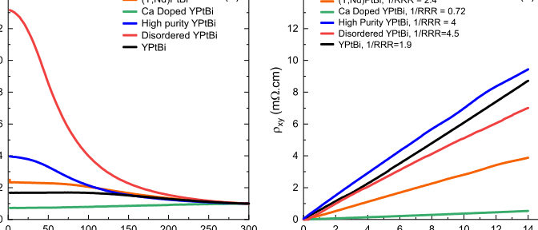
<figcaption class="paper-figure-caption"><b>Fig 1.</b> FIG. 1. Variation of transport behavior of YPtBi with disorder, purity and charge doping. (a) and (b) Normalized resistivity and Hall resistivity of the various types of YPtBi grown respectively. Panel (a) shows data for Y0.997Ca0.003PtBi and Y0.52Nd0.48PtBi, while panel (b) show data for Y0.991Ca0.009PtBi and Y0.80Nd0.20PtBi. (c) Plot of 1/RRR vs residual resistivity indicating a change in the residual resistivity in the samples as opposed to room temperature resistivity. (d) Carrier density of various samples as a function of 1/RRR. Filled symbols are quantities measured with Hall and open symbols are measured with quantum oscillations.</figcaption>
</figure>
<figure class="paper-figure-card">

<figcaption class="paper-figure-caption"><b>Fig 2.</b> FIG. 2. Quantum oscillations in chemically tuned YPtBi. (a) - (d) Raw data of resistance vs magnetic field of disordered, high purity, Ca doped samples and (Y,Nd)PtBi respectively. Inset shows subtracted resistance curves offset to show the oscillations more clearly. (e) Fast Fourier transform of the oscillations showing changes in frequency of the four types of YPtBi. (f) Lifshitz-Kosevich fits (lines) of the temperature dependence of the amplitude of oscillations which is used to extract the effective mass.</figcaption>
</figure>
<figure class="paper-figure-card">

<figcaption class="paper-figure-caption"><b>Fig 3.</b> Fig. 2(a) presents the weaker quantum oscillations observed in disordered samples. Although the oscilla- tions are less prominent due to increased scattering, the background-subtracted oscillatory component is indeed periodic in 1/µ◦H, as shown in the inset. The FFT in Fig. 2(e) reveals a peak at F ≈54 T, similar to that of YPtBi. The extracted effective mass is m∗= 0.11me matching that of YPtBi. These observations suggest that while disorder suppresses the quantum oscillation ampli- tude by enhancing scattering, it does not significantly shift the Fermi level or alter the carrier density, consis- tent with the Hall data described above.</figcaption>
</figure>
<figure class="paper-figure-card">

<figcaption class="paper-figure-caption"><b>Fig 4.</b> FIG. 3. Angle-dependent probe of j=3/2 Fermi surface in YPtBi. Rotation measurements on the high purity and (Y,Nd)PtBi samples. (a,c) Raw data at various angles. Inset shows the rotation axis of the field along the principal axes. (b,d) Subtracted data offset to show the oscillations at various angles clearly showing a suppression of amplitude around to 011 axis for both samples.</figcaption>
</figure>
<figure class="paper-figure-card">
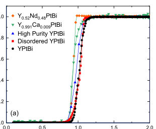
<figcaption class="paper-figure-caption"><b>Fig 5.</b> FIG. 4. Insensitivity of j=3/2 superconductivity to disorder and carrier density tuning. (a) Normalized resistivity curves for the samples clearly showing no variation in transition temperature. (b) Various samples measured in resistivity showing no change in Tc due to disorder. (c) Tc vs carrier density showing no change in the transition temperature.</figcaption>
</figure>
</div>
<p><strong>Summary.</strong> This work experimentally investigates the superconducting state in the topological semimetal YPtBi, which features j=3/2 quasiparticle states. By testing samples with varying levels of disorder and doping, the authors demonstrate that $T_c$ is highly resilient. This resilience strongly suggests that superconductivity in this material is governed by phase stiffness rather than conventional pair-breaking mechanisms.</p>
<p><strong>Why it may be interesting.</strong> The observed robustness of superconductivity in a high-spin system suggests exotic pairing mechanisms that are insensitive to local perturbations, providing an experimental playground for theories beyond standard BCS theory and potentially linking to quantum criticality or topological protection.</p>
<details>
<summary>Detailed structure</summary>
<p><strong>Main problem.</strong> To investigate the robustness of exotic j=3/2 superconductivity in the topological semimetal YPtBi against significant perturbations like magnetic and nonmagnetic disorder, and changes in carrier density.</p>
<p><strong>Main result.</strong> The superconducting critical temperature ($T_c$) remains remarkably robust across large variations in disorder and doping levels, suggesting that the transition is governed by phase stiffness rather than conventional pair formation mechanisms.</p>
<p><strong>Method.</strong> The study combines electrical transport measurements (resistivity, Hall effect) with quantum oscillation analysis (Shubnikov de Haas oscillations) on various doped and disordered samples of YPtBi.</p>
<p><strong>Model / system.</strong> The physical system is the topological semimetal YPtBi, characterized by strong spin-orbit coupling leading to a manifold of j=3/2 quasiparticle states near the Fermi level where superconductivity occurs. The analysis compares results against theoretical expectations from BCS theory and phase stiffness models.</p>
<p><strong>Key observables.</strong> Superconducting critical temperature ($T_c$), residual resistivity ratio (RRR), quantum oscillation frequency ($F$) and effective mass ($m^*$), and carrier density derived from the Hall coefficient.</p>
<p><strong>Important parameters / regimes.</strong> Disorder levels, carrier densities spanning orders of magnitude, and the high angular momentum state j=3/2.</p>
<p><strong>Assumptions / limitations.</strong> The robustness suggests a mechanism where phase coherence (phase stiffness) dictates $T_c$, rather than simple pair amplitude formation, challenging standard BCS predictions for disorder effects.</p>
<p><strong>Figures summary.</strong> Figures show normalized resistivity and Hall resistivity across different sample types; quantum oscillation analysis confirms changes in Fermi surface parameters ($F, m^*$) upon doping/purity changes; a key figure summarizes the constant $T_c$ despite large variations in disorder and carrier density.</p>
<p><strong>Paper structure.</strong> The paper establishes the material's exotic superconducting nature (j=3/2) and then systematically tests its stability by varying disorder and doping, using quantum oscillations to probe normal state changes while monitoring $T_c$. The conclusion pivots on interpreting this resilience as evidence for phase stiffness control.</p>
</details>
<details>
<summary>Abstract</summary>
<p>Cooper pairing in most of the known fermionic superfluids occurs via spin-1/2 quasiparticle interactions that lead to spin-singlet or spin-triplet pairing. In the topological semimetal YPtBi, strong spin-orbit coupling results in a band inversion between highly symmetric $s$- and $p$-like electronic bands and a degeneracy at the $Γ$ point that ensures the manifold of $j$=3/2 quasiparticle states thrive near the Fermi level, where superconducting pairing occurs. Here we study the effects of magnetic and nonmagnetic disorder and carrier density on this exotic superconducting pairing state. By varying levels of disorder and carrier densities by nearly two and three orders of magnitude, respectively, we show that the superconducting critical temperature of YPtBi has a remarkable robustness, with little variation across this span. Our results suggest that superconductivity in YPtBi may reside in a regime where phase stiffness, rather than pair formation, governs the transition temperature. The insensitivity of Cooper pairing to dramatic changes in quasiparticle environment in a $j$=3/2 superconductor highlights a new form of protection realized in topological high-spin superconductors.</p>
</details>
<p><sub><a href="#top">↑ back to top</a></sub></p>

<p><a id="paper-2607.00945"></a></p>
<h3 id="the-dynamical-lie-algebra-of-qaoa-maxcut-on-the-complete-graph"><a href="http://arxiv.org/abs/2607.00945v1">The Dynamical Lie Algebra of QAOA-MaxCut on the Complete Graph</a></h3>
<p><strong>Authors:</strong> Jonathan Allcock, Pei Yuan, Shengyu Zhang<br>
<strong>Type:</strong> theory · <strong>Category:</strong> quantum information and computing · <strong>PDF:</strong> <a href="https://arxiv.org/pdf/2607.00945v1">https://arxiv.org/pdf/2607.00945v1</a><br>
<strong>Analysis basis:</strong> full PDF text, analyzed in chunks</p>
<div class="figure-strip-hint">↔ Scroll figures horizontally</div>
<div class="paper-figures-scroll">
<figure class="paper-figure-card">
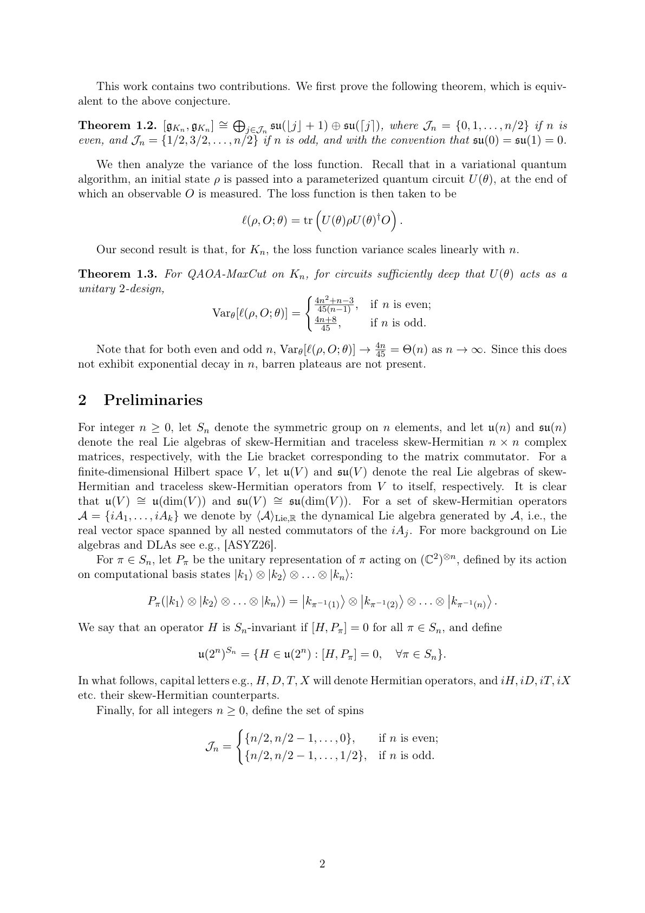
<figcaption class="paper-figure-caption"><b>Fig 1.</b> Low-resolution page preview, page 2</figcaption>
</figure>
<figure class="paper-figure-card">
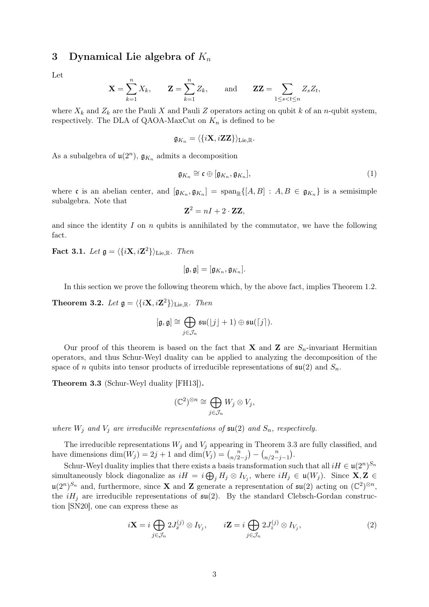
<figcaption class="paper-figure-caption"><b>Fig 2.</b> Low-resolution page preview, page 3</figcaption>
</figure>
<figure class="paper-figure-card">

<figcaption class="paper-figure-caption"><b>Fig 3.</b> Low-resolution page preview, page 4</figcaption>
</figure>
<figure class="paper-figure-card">

<figcaption class="paper-figure-caption"><b>Fig 4.</b> Low-resolution page preview, page 5</figcaption>
</figure>
<figure class="paper-figure-card">

<figcaption class="paper-figure-caption"><b>Fig 5.</b> Low-resolution page preview, page 6</figcaption>
</figure>
</div>
<p><strong>Summary.</strong> This theoretical paper analyzes the structure of the dynamical Lie algebra governing QAOA-MaxCut on complete graphs. By employing advanced techniques like Schur-Weyl duality, the authors prove that the variance of the loss function scales linearly with system size. This result definitively shows that barren plateaus are absent for this specific quantum optimization problem.</p>
<p><strong>Why it may be interesting.</strong> This work provides a rigorous mathematical proof regarding the complexity landscape of quantum optimization algorithms, directly addressing the critical issue of barren plateaus which limits current NISQ device applications.</p>
<details>
<summary>Detailed structure</summary>
<p><strong>Main problem.</strong> The paper characterizes the dynamical Lie algebra associated with the QAOA-MaxCut problem on complete graphs and determines if the system suffers from barren plateaus.</p>
<p><strong>Main result.</strong> It proves that the variance of the loss function scales linearly ($\Theta(n)$) with the number of qubits, thereby confirming that barren plateaus do not occur for this specific quantum optimization problem.</p>
<p><strong>Method.</strong> The analysis uses Dynamical Lie Algebras (DLAs), Schur-Weyl duality to decompose operators in $u(2n)_{S_n}$, and commutator relations to establish structural inclusions within the algebra.</p>
<p><strong>Model / system.</strong> The system is QAOA applied to finding the MaxCut on a complete graph ($K_n$) using $n$ qubits. The mathematical framework revolves around analyzing the generators of the associated Lie algebra, $\{iX, iZ^2\}$.</p>
<p><strong>Key observables.</strong> Loss function variance ($  ext{Var}_   heta[\ell(
ho, O;  heta)]$), and the structure/basis elements of the dynamical Lie algebra $[\mathfrak{g}, \mathfrak{g}]$.</p>
<p><strong>Important parameters / regimes.</strong> Number of qubits ($n$); indices $j$ related to irreducible representations (spins).</p>
<p><strong>Assumptions / limitations.</strong> The proof relies on establishing specific reverse inclusions in the structure of the commutator subspace, and for variance calculation, it assumes the circuit is deep enough to form a unitary 2-design.</p>
<p><strong>Figures summary.</strong> Not specified by notes; the focus is on mathematical theorems (Theorem 1.2, Theorem 1.3) and structural proofs (Lemma 3.8, Lemma 3.9).</p>
<p><strong>Paper structure.</strong> The paper proceeds by first defining the DLA for QAOA-MaxCut, then using Schur-Weyl duality to decompose the algebra structure ($\mathfrak{g} \sim c \oplus [g, g]$). It rigorously proves that $[g_{K_n}, g_{K_n}]$ contains specific subspaces related to $\mathfrak{su}(W^{(j)}_{	ext{even}}) \oplus \mathfrak{su}(W^{(j)}_{	ext{odd}})$, culminating in the variance scaling result.</p>
</details>
<details>
<summary>Abstract</summary>
<p>We give an analytical expression for the dynamical Lie algebra corresponding to the QAOA-MaxCut problem on complete graphs, and show that the variance of the associated loss function scales linearly in the number of qubits. This solves an open problem from [ASYZ26] and confirms that such systems do not exhibit barren plateaus. The proof is based on projecting the dynamical Lie algebra generators onto subspaces given by the Schur-Weyl duality between irreducible representations of the unitary and symmetric groups.</p>
</details>
<p><sub><a href="#top">↑ back to top</a></sub></p>
</details>
<h2 id="secondary-cond-mat-archives">Secondary cond-mat archives</h2>
<p><em>Papers from cond-mat.mtrl-sci, mes-hall, other, soft, supr-con. These archives are de-prioritized — they appear at the end regardless of relevance score.</em></p>
<h3 id="relevant-in-secondary-archives-21">Relevant in secondary archives (21)</h3>

<p><a id="paper-2607.00520"></a></p>
<h3 id="real-time-dynamics-of-triplet-resonant-tunneling-driven-by-nonequilibrium-phonons"><a href="http://arxiv.org/abs/2607.00520v1">Real-time dynamics of triplet-resonant tunneling driven by nonequilibrium phonons</a></h3>
<p><strong>Authors:</strong> Kazuyuki Kuroyama, Sasha R. Valentin, Arne Ludwig, Andreas D. Wieck, Yasuhiro Tokura, Seigo Tarucha, Sadashige Matsuo<br>
<strong>Type:</strong> experiment · <strong>Category:</strong> statistical mechanics · <strong>PDF:</strong> <a href="https://arxiv.org/pdf/2607.00520v1">https://arxiv.org/pdf/2607.00520v1</a><br>
<strong>Analysis basis:</strong> full PDF text, analyzed in chunks
<strong>Topic relevance:</strong> 🔥 <code>non-equilibrium dynamics</code> <strong>5/5</strong> · 🔥 <code>driven-dissipative phase transition</code> <strong>4/5</strong> · 🔥 <code>methods for driven-dissipative</code> <strong>4/5</strong> · <code>exotic spin models in light-matter</code> <strong>3/5</strong> · <code>non-equilibrium universality</code> <strong>3/5</strong> · <code>spintronics-quantum-optics interface</code> <strong>3/5</strong> · <code>Kondo &amp; dissipative impurity</code> <strong>2/5</strong> · <code>quantum measurements</code> <strong>2/5</strong> · <code>Keldysh / 2PI / non-Gaussian methods</code> <strong>1/5</strong> · <code>analog quantum simulation</code> <strong>1/5</strong> · <code>correlated / nonlocal dissipation</code> <strong>1/5</strong> · <code>measurement-induced transitions</code> <strong>1/5</strong></p>
<div class="figure-strip-hint">↔ Scroll figures horizontally</div>
<div class="paper-figures-scroll">
<figure class="paper-figure-card">
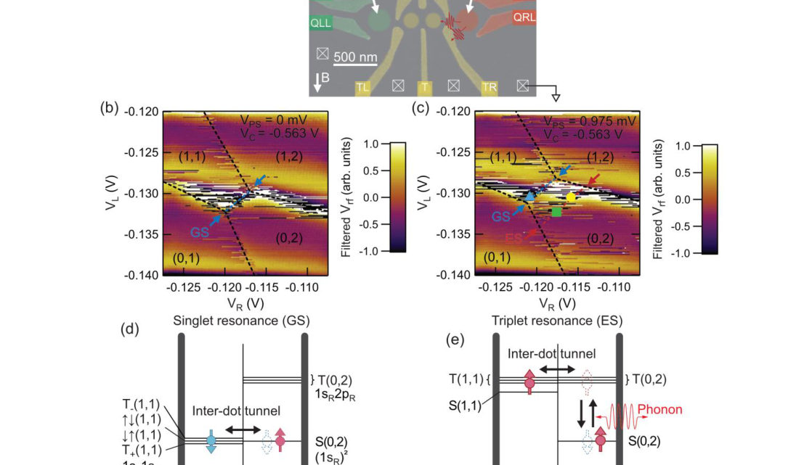
<figcaption class="paper-figure-caption"><b>Fig 1.</b> FIG. 1. (a) Geometry of our DQD sample with a charge sensor and a QD-based phonon source. (b) Charge stability diagram of the DQD near the (1,1)-(0,2) inter-dot resonance at 𝑉PS = 0 mV. The singlet resonance line is guided by the blue dashed line, and the boundaries of the charge states are guided by the black dashed lines. (c) Charge stability diagram measured at 𝑉PS = 0.975 mV. The singlet (GS) and triplet (ES) resonance lines are indicated by the blue and red dashed lines. (d,e) Transition diagrams at the singlet (d) and triplet (e) resonance conditions. 1sL and 1sR denote the 1s orbitals in the left and right QDs, respectively, and 2pR denotes the 2p orbital in the right QD.</figcaption>
</figure>
<figure class="paper-figure-card">
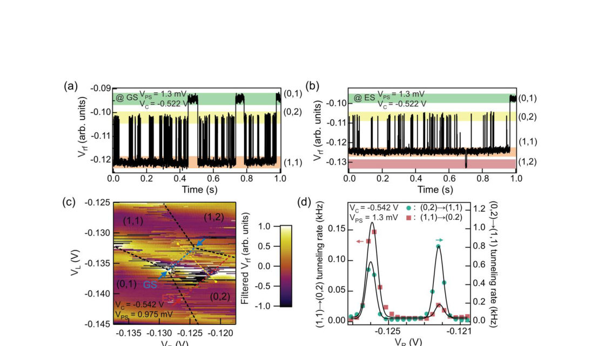
<figcaption class="paper-figure-caption"><b>Fig 2.</b> FIG. 2. (a) Typical time trace of inter-dot tunneling events measured at the singlet resonance. (b) Typical time trace of inter-dot tunneling events measured at the triplet resonance. (c) Charge stability diagram measured under phonon irradiation at slightly different inter-dot tunnel coupling strength from Fig. 1(c) by changing a gate voltage applied to gate C. (d) Inter-dot tunnel rates of the (1,1)→(0,2) tunneling (red squares) and the (0,2)→(1,1) tunneling (green circles) extracted along the yellow dashed cut in (c). The left (right) peak corresponds to the singlet (triplet) resonance.</figcaption>
</figure>
<figure class="paper-figure-card">
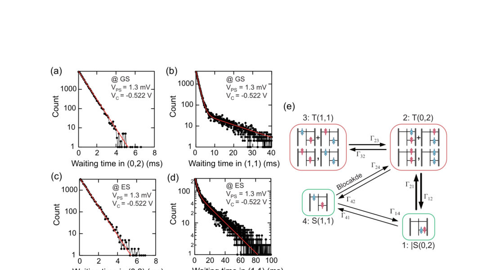
<figcaption class="paper-figure-caption"><b>Fig 3.</b> FIG. 3. (a, b) (0,2) and (1,1) waiting-time histograms obtained from the time traces measured at the singlet-resonance (GS) are plotted, respectively. The red curves are fits to a single- exponential function in (a) and a double-exponential function in (b). (c,d) (0,2) and (1,1) waiting-time histograms obtained from the time traces measured at the triplet resonance condition (ES). The red curves are fits to a single-exponential function in (c) and a double- exponential function in (d). (e) DQD transition diagram at the triplet resonance. The spin state initially located at |𝑆(0,2)⟩ is frequently excited to |𝑇(0,2)⟩ by a single phonon excitation. When the DQD spin state enters |𝑆(1,1)⟩, the...</figcaption>
</figure>
<figure class="paper-figure-card">
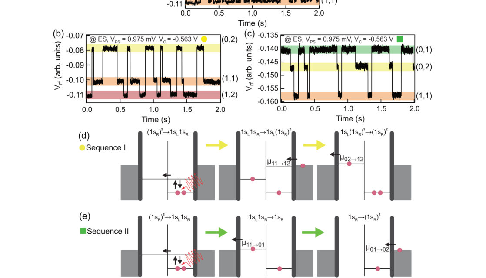
<figcaption class="paper-figure-caption"><b>Fig 4.</b> FIG. 4. (a) Typical time trace of the DQD inter-dot tunneling events observed at the singlet resonance for reduced inter-dot tunnel coupling, tuned by applying a more negative voltage to gate C (see Fig. 1(a) for the sample geometry). (b, c) Typical time trace of inter-dot tunneling events measured at the triplet resonance marked by the yellow circle and the green square in Fig. 1(c). The time trace in (b) is measured at the DQD operation point closer to the (1,2) region, while the time trace in (c) is measured at the DQD operation point closer to the (0,1) region. (d,e) Schematic sequences illustrating phonon-driven unidirectional charge- transfer cycles: (d) (0,2)→(1,1)→(1,2)→(0,2) and...</figcaption>
</figure>
</div>

<p><strong>Summary.</strong> The researchers measured the real-time charge and spin dynamics in a double quantum dot driven by nonequilibrium phonons. They found that at triplet resonance, the phonon environment induces strong rectification, leading to a measurable current via unidirectional electron transport cycles. This demonstrates how non-equilibrium driving can generate directed quantum currents in solid-state devices.</p>
<p><strong>Why it may be interesting.</strong> This work provides a direct experimental realization of non-equilibrium quantum dynamics, showing how external energy baths (phonons) can induce directed, non-reciprocal transport cycles in mesoscopic solid-state systems, which is highly relevant to open quantum system physics and energy harvesting concepts.</p>
<details>
<summary>Detailed structure</summary>
<p><strong>Main problem.</strong> The study investigates real-time charge and spin dynamics in excited states of a double quantum dot (DQD) driven by nonequilibrium phonons to understand emergent functionalities beyond equilibrium.</p>
<p><strong>Main result.</strong> The system exhibits strong, measurable rectification ($\eta \approx 1$) leading to unidirectional electron transport cycles when driven by the phonon gradient at triplet resonance conditions.</p>
<p><strong>Method.</strong> Time-resolved charge sensing and rate analysis are used to track inter-dot tunneling events under controlled nonequilibrium phonon irradiation.</p>
<p><strong>Model / system.</strong> The physical platform is a semiconductor DQD fabricated on an AlGaAs/GaAs/AlGaAs heterostructure, coupled with a nearby phonon source QD. Dynamics are analyzed using spin states (Singlet/Triplet) and rate equations derived from time-resolved measurements.</p>
<p><strong>Key observables.</strong> Inter-dot resonant tunneling rates ($\Gamma$), waiting-time histograms, current ($I \sim 10^{-19}$ A), and rectification parameter ($\eta$).</p>
<p><strong>Important parameters / regimes.</strong> Low temperature ($\approx 20$ mK); detuning voltage ($V_R$); phonon bias voltage ($V_{PS}$).</p>
<p><strong>Assumptions / limitations.</strong> The dynamics are governed by the coupling between electronic states and the nonequilibrium phonon bath, allowing for rate-equation descriptions.</p>
<p><strong>Figures summary.</strong> Figures show charge stability diagrams revealing new triplet resonances (Fig. 1c); time traces illustrate resonant tunneling at both singlet and triplet conditions (Fig. 2a/b); waiting-time histograms compare rates across resonance types (Fig. 3); and later figures detail the unidirectional current generation and rectification ($\eta$) in weak coupling regimes (Fig. 4).</p>
<p><strong>Paper structure.</strong> The paper progresses from establishing the experimental setup and observing basic resonant tunneling at singlet/triplet resonances, to quantifying dwell times using waiting-time statistics, and finally demonstrating nonreciprocal transport by analyzing current generation and rectification ($\eta$) in the weak coupling limit.</p>
</details>
<details>
<summary>Abstract</summary>
<p>Driven nonequilibrium systems can host emergent functionalities beyond equilibrium, but real-time access to excited-state dynamics remains limited. Here we report real-time measurements of phonon-driven charge and spin dynamics in excited states of a double quantum dot. Under phonon irradiation, resonant inter-dot tunneling emerges at triplet resonance. Time-resolved charge sensing reveals that the resonant inter-dot tunneling is strongly modified by spin blockade. For weaker inter-dot coupling, the nonequilibrium phonon environment generates a unidirectional transport cycle along the phonon density gradient.</p>
</details>
<p><sub><a href="#top">↑ back to top</a></sub></p>

<p><a id="paper-2607.00343"></a></p>
<h3 id="universal-scaling-of-the-spin-hall-effect"><a href="http://arxiv.org/abs/2607.00343v1">Universal Scaling of the Spin Hall Effect</a></h3>
<p><strong>Authors:</strong> Atsuo Shitade, Naoto Nagaosa<br>
<strong>Type:</strong> theory · <strong>Category:</strong> other · <strong>PDF:</strong> <a href="https://arxiv.org/pdf/2607.00343v1">https://arxiv.org/pdf/2607.00343v1</a><br>
<strong>Analysis basis:</strong> full PDF text, analyzed in chunks
<strong>Topic relevance:</strong> 🔥 <code>Keldysh / 2PI / non-Gaussian methods</code> <strong>4/5</strong> · <code>methods for driven-dissipative</code> <strong>3/5</strong> · <code>non-equilibrium universality</code> <strong>3/5</strong> · <code>spintronics-quantum-optics interface</code> <strong>3/5</strong> · <code>Kondo &amp; dissipative impurity</code> <strong>2/5</strong> · <code>non-equilibrium dynamics</code> <strong>2/5</strong> · <code>correlated / nonlocal dissipation</code> <strong>1/5</strong> · <code>driven-dissipative phase transition</code> <strong>1/5</strong> · <code>exotic spin models in light-matter</code> <strong>1/5</strong></p>
<div class="figure-strip-hint">↔ Scroll figures horizontally</div>
<div class="paper-figures-scroll">
<figure class="paper-figure-card">

<figcaption class="paper-figure-caption"><b>Fig 1.</b> FIG. 1. DOS for (ℏv/∆)3ni = 5.448.</figcaption>
</figure>
<figure class="paper-figure-card">

<figcaption class="paper-figure-caption"><b>Fig 2.</b> Figure 3 shows the scaling relation between the electric conductivity and the SAC and MMAC. We choose ϵF &gt; 0 to avoid the aforementioned sign change. Both these co- efficients have three regimes similarly to the AH conduc- tivity [12, 13]. In the superclean regime, the skew scatter- ing is dominant, and Γ00g xy sz and −Γ00g xy mz are propor- tional to σyy. In the moderately dirty regime, these coef- ficients are almost constant. Finally, in the dirty regime, we find a new scaling relation Γ00g xy sz , −Γ00g xy mz ∝ (σyy)0.6.</figcaption>
</figure>
<figure class="paper-figure-card">

<figcaption class="paper-figure-caption"><b>Fig 3.</b> FIG. 2. Fermi-energy dependence of (a) the SAC −Γ00g xy sz and (b) MMAC −Γ00g xy mz within the T-matrix approximation with (black solid lines) and without the VCs (blue dashed lines). We also show the results within the first-order Born approximation with (orange dotted lines) and without the VCs (green dash-dotted lines). We choose (ℏv/∆)3ni = 0.1 and ∆2vi/(ℏv)3 = 0.1.</figcaption>
</figure>
<figure class="paper-figure-card">

<figcaption class="paper-figure-caption"><b>Fig 4.</b> FIG. 3. Electric-conductivity dependence of (a) the SAC Γ00g xy sz and MMAC −Γ00g xy mz by changing the impurity concentration (ℏv/∆)3ni from 10−1 to 102.5. We choose ϵF/∆= 3.917. The slopes of two gray solid lines represent Γ00g xy sz , −Γ00g xy mz ∝σyy, (σyy)0.6.</figcaption>
</figure>
<figure class="paper-figure-card">

<figcaption class="paper-figure-caption"><b>Fig 5.</b> FIG. 4. Feynman diagrams for (a) the self-energy within the self-consistent T-matrix approximation, (b) the renormalized velocity vertex, (c) the spin–charge-current correlation function of the first order with respect to Qx, and (d) the correation function that vanishes in the case of short-range impurities.</figcaption>
</figure>
</div>

<p><strong>Summary.</strong> This paper develops a comprehensive theory for the Spin Hall effect in Dirac electron systems by analyzing how spin and magnetic moment accumulation coefficients scale with electric conductivity. Using advanced Green's function techniques, the authors identify three distinct transport regimes—superclean, moderately dirty, and dirty—and establish a unified framework that differs from previous anomalous Hall effect scaling laws.</p>
<p><strong>Why it may be interesting.</strong> While focused on condensed matter transport, the rigorous development of scaling laws and the need to define fundamental quantities (like spin current) in different scattering limits provides general theoretical tools applicable to open quantum systems dynamics.</p>
<details>
<summary>Detailed structure</summary>
<p><strong>Main problem.</strong> The study investigates the scaling behavior of the Spin Hall (SH) effect for Dirac electrons, aiming to construct a unified theory that correctly defines spin current.</p>
<p><strong>Main result.</strong> Three distinct transport regimes are found based on electric conductivity ($\sigma_{yy}$): superclean ($\propto \sigma_{yy}$), moderately dirty (constant), and dirty ($\propto (\sigma_{yy})^{0.6}$).</p>
<p><strong>Method.</strong> The analysis employs linear response theory using Keldysh Green's functions and the self-consistent T-matrix approximation to account for short-range nonmagnetic impurities.</p>
<p><strong>Model / system.</strong> The model is based on Dirac electrons, described by an anisotropic Hamiltonian ($\hat{H}(\mathbf{k})$), applied to systems like bismuth. Impurity scattering is treated via the T-matrix formalism.</p>
<p><strong>Key observables.</strong> Spin Accumulation Coefficient (SAC) and Magnetic-Moment Accumulation Coefficient (MMAC); Spin Hall Conductivity ($\sigma_{xy}^{sz}$) and MMH conductivity ($\sigma_{xy}^{mz}$).</p>
<p><strong>Important parameters / regimes.</strong> Electric conductivity ($\sigma_{yy}$), Fermi energy ($\epsilon_F$), impurity concentration, temperature ($T=0$).</p>
<p><strong>Assumptions / limitations.</strong> The analysis relies on the T-matrix approximation for impurities and involves deriving transport coefficients using vertex corrections (VCs) in the linear response formalism.</p>
<p><strong>Figures summary.</strong> Figures illustrate the Density of States (DOS), Fermi-energy dependence of SAC/MMAC, and crucially, the scaling relationship between SAC/MMAC and $\sigma_{yy}$ across the three distinct scattering regimes.</p>
<p><strong>Paper structure.</strong> The paper develops theoretical formulas for various transport coefficients using Green's functions in the T-matrix approximation. It then analyzes how these coefficients scale with conductivity ($\sigma_{yy}$) by identifying three distinct physical regimes, culminating in a unified theory framework.</p>
</details>
<details>
<summary>Abstract</summary>
<p>We study the spin Hall (SH) effect for the Dirac electrons in terms of the spin and magnetic-moment accumulation coefficients $-Γ^{00} g_{s(m)z}^{\phantom{s(m)z} xy}$. We take short-range nonmagnetic impurities into account within the self-consistent $T$-matrix approximation. Similarly to the universal scaling for the anomalous Hall (AH) effect, we find three disctinct regimes by changing the electric conductivity $σ^{yy}$; the superclean regime with $-Γ^{00} g_{s(m)z}^{\phantom{s(m)z} xy} \propto σ^{yy}$ owing to the skew scattering, moderately dirty regime with almost constant $-Γ^{00} g_{s(m)z}^{\phantom{s(m)z} xy}$, and dirty regime with a new scaling relation $-Γ^{00} g_{s(m)z}^{\phantom{s(m)z} xy} \propto (σ^{yy})^{0.6}$ whose exponent differs from that of the AH conductivity. Our results construct a unified theory of the SH effect without any ambiguity of spin current.</p>
</details>
<p><sub><a href="#top">↑ back to top</a></sub></p>
<hr>
<p>
<a href="index.html">← Index</a>
 · <a href="papers_04.html">← Previous</a> · <a href="papers_06.html">Next →</a>
</p>
<hr>

</body>
</html>
